Project Code (Heart Disease Prediction)#
Create a normalized database (3NF).#
import pandas as pd
import sqlite3
from sqlite3 import Error
import os
# Function to create a database connecti`on
def create_connection(db_file, delete_db=False):
if delete_db and os.path.exists(db_file):
os.remove(db_file)
conn = None
try:
conn = sqlite3.connect(db_file)
conn.execute("PRAGMA foreign_keys = 1")
except Error as e:
print(e)
return conn
# Function to create tables
def create_table(conn, create_table_sql, drop_table_name=None):
if drop_table_name: # Drop table if specified
try:
c = conn.cursor()
c.execute(f"DROP TABLE IF EXISTS {drop_table_name}")
except Error as e:
print(e)
try:
c = conn.cursor()
c.execute(create_table_sql)
except Error as e:
print(e)
---------------------------------------------------------------------------
ModuleNotFoundError Traceback (most recent call last)
Cell In[1], line 1
----> 1 import pandas as pd
2 import sqlite3
3 from sqlite3 import Error
ModuleNotFoundError: No module named 'pandas'
# Database and file paths
db_name = '/Users/rohanjain/Desktop/Sem1/Prog_DB/Final project/heart_disease_database.db'
csv_file_path = '/Users/rohanjain/Desktop/Sem1/Prog_DB/Final_project/heart_disease.csv'
# Load the CSV data
df = pd.read_csv(csv_file_path)
# Split the data into normalized tables
# Patient_Info Table
patient_info = df[['age', 'sex']].copy()
patient_info['patient_id'] = range(1, len(patient_info) + 1)
# Medical_Record Table
medical_record = df[['chest pain type', 'resting bp s', 'cholesterol', 'fasting blood sugar']].copy()
medical_record['patient_id'] = range(1, len(medical_record) + 1)
# Test_Results Table
test_results = df[['resting ecg', 'max heart rate', 'exercise angina', 'oldpeak', 'ST slope']].copy()
test_results['patient_id'] = range(1, len(test_results) + 1)
# Diagnosis Table
diagnosis = df[['target']].copy()
diagnosis['patient_id'] = range(1, len(diagnosis) + 1)
# Create database connection
conn = create_connection(db_name, delete_db=True)
# Create tables
create_table(conn, """
CREATE TABLE Patient_Info (
patient_id INTEGER PRIMARY KEY,
age INTEGER,
sex INTEGER
)
""", drop_table_name="Patient_Info")
create_table(conn, """
CREATE TABLE Medical_Record (
patient_id INTEGER PRIMARY KEY,
[chest pain type] INTEGER,
[resting bp s] INTEGER,
cholesterol INTEGER,
[fasting blood sugar] INTEGER
)
""", drop_table_name="Medical_Record")
create_table(conn, """
CREATE TABLE Test_Results (
patient_id INTEGER PRIMARY KEY,
[resting ecg] INTEGER,
[max heart rate] INTEGER,
[exercise angina] INTEGER,
oldpeak REAL,
[ST slope] INTEGER
)
""", drop_table_name="Test_Results")
create_table(conn, """
CREATE TABLE Diagnosis (
patient_id INTEGER PRIMARY KEY,
target INTEGER
)
""", drop_table_name="Diagnosis")
Write SQL join statement to fetch data from the database and into Pandas DataFrame.#
# Populate tables
patient_info.to_sql('Patient_Info', conn, if_exists='replace', index=False)
medical_record.to_sql('Medical_Record', conn, if_exists='replace', index=False)
test_results.to_sql('Test_Results', conn, if_exists='replace', index=False)
diagnosis.to_sql('Diagnosis', conn, if_exists='replace', index=False)
print("Database tables created and populated.")
# Join query to combine the four tables
query = """
SELECT
p.patient_id,
p.age,
p.sex,
m.[chest pain type],
m.[resting bp s],
m.cholesterol,
m.[fasting blood sugar],
t.[resting ecg],
t.[max heart rate],
t.[exercise angina],
t.oldpeak,
t.[ST slope],
d.target
FROM
Patient_Info p
JOIN
Medical_Record m ON p.patient_id = m.patient_id
JOIN
Test_Results t ON p.patient_id = t.patient_id
JOIN
Diagnosis d ON p.patient_id = d.patient_id;
"""
# Execute the query and fetch the data
df_combined = pd.read_sql_query(query, conn)
# Close the connection
conn.close()
Database tables created and populated.
Explore the data using yprofile and correlation matrix. Make observations about features, distributions, capped values, and missing values. Create a list of data cleanup tasks.#
df = df_combined
df.head()
| patient_id | age | sex | chest pain type | resting bp s | cholesterol | fasting blood sugar | resting ecg | max heart rate | exercise angina | oldpeak | ST slope | target | |
|---|---|---|---|---|---|---|---|---|---|---|---|---|---|
| 0 | 1 | 40 | 1 | 2 | 140 | 289 | 0 | 0 | 172 | 0 | 0.0 | 1 | 0 |
| 1 | 2 | 49 | 0 | 3 | 160 | 180 | 0 | 0 | 156 | 0 | 1.0 | 2 | 1 |
| 2 | 3 | 37 | 1 | 2 | 130 | 283 | 0 | 1 | 98 | 0 | 0.0 | 1 | 0 |
| 3 | 4 | 48 | 0 | 4 | 138 | 214 | 0 | 0 | 108 | 1 | 1.5 | 2 | 1 |
| 4 | 5 | 54 | 1 | 3 | 150 | 195 | 0 | 0 | 122 | 0 | 0.0 | 1 | 0 |
df.shape
(1190, 13)
def clean_column_names(df):
df.columns = df.columns.str.replace(' ', '_').str.lower()
return df
df = clean_column_names(df)
df.head()
| patient_id | age | sex | chest_pain_type | resting_bp_s | cholesterol | fasting_blood_sugar | resting_ecg | max_heart_rate | exercise_angina | oldpeak | st_slope | target | |
|---|---|---|---|---|---|---|---|---|---|---|---|---|---|
| 0 | 1 | 40 | 1 | 2 | 140 | 289 | 0 | 0 | 172 | 0 | 0.0 | 1 | 0 |
| 1 | 2 | 49 | 0 | 3 | 160 | 180 | 0 | 0 | 156 | 0 | 1.0 | 2 | 1 |
| 2 | 3 | 37 | 1 | 2 | 130 | 283 | 0 | 1 | 98 | 0 | 0.0 | 1 | 0 |
| 3 | 4 | 48 | 0 | 4 | 138 | 214 | 0 | 0 | 108 | 1 | 1.5 | 2 | 1 |
| 4 | 5 | 54 | 1 | 3 | 150 | 195 | 0 | 0 | 122 | 0 | 0.0 | 1 | 0 |
print(df.isnull().sum())
patient_id 0
age 0
sex 0
chest_pain_type 0
resting_bp_s 0
cholesterol 0
fasting_blood_sugar 0
resting_ecg 0
max_heart_rate 0
exercise_angina 0
oldpeak 0
st_slope 0
target 0
dtype: int64
print(df.describe())
patient_id age sex chest_pain_type resting_bp_s \
count 1190.000000 1190.000000 1190.000000 1190.000000 1190.000000
mean 595.500000 53.720168 0.763866 3.232773 132.153782
std 343.667717 9.358203 0.424884 0.935480 18.368823
min 1.000000 28.000000 0.000000 1.000000 0.000000
25% 298.250000 47.000000 1.000000 3.000000 120.000000
50% 595.500000 54.000000 1.000000 4.000000 130.000000
75% 892.750000 60.000000 1.000000 4.000000 140.000000
max 1190.000000 77.000000 1.000000 4.000000 200.000000
cholesterol fasting_blood_sugar resting_ecg max_heart_rate \
count 1190.000000 1190.000000 1190.000000 1190.000000
mean 210.363866 0.213445 0.698319 139.732773
std 101.420489 0.409912 0.870359 25.517636
min 0.000000 0.000000 0.000000 60.000000
25% 188.000000 0.000000 0.000000 121.000000
50% 229.000000 0.000000 0.000000 140.500000
75% 269.750000 0.000000 2.000000 160.000000
max 603.000000 1.000000 2.000000 202.000000
exercise_angina oldpeak st_slope target
count 1190.000000 1190.000000 1190.000000 1190.000000
mean 0.387395 0.922773 1.624370 0.528571
std 0.487360 1.086337 0.610459 0.499393
min 0.000000 -2.600000 0.000000 0.000000
25% 0.000000 0.000000 1.000000 0.000000
50% 0.000000 0.600000 2.000000 1.000000
75% 1.000000 1.600000 2.000000 1.000000
max 1.000000 6.200000 3.000000 1.000000
print(df.dtypes)
patient_id int64
age int64
sex int64
chest_pain_type int64
resting_bp_s int64
cholesterol int64
fasting_blood_sugar int64
resting_ecg int64
max_heart_rate int64
exercise_angina int64
oldpeak float64
st_slope int64
target int64
dtype: object
# Value counts for categorical columns
categorical_columns = ['sex', 'chest_pain_type', 'fasting_blood_sugar', 'resting_ecg', 'exercise_angina', 'st_slope', 'target']
for col in categorical_columns:
print(f"Value Counts for {col}:")
print(df[col].value_counts())
print()
Value Counts for sex:
sex
1 909
0 281
Name: count, dtype: int64
Value Counts for chest_pain_type:
chest_pain_type
4 625
3 283
2 216
1 66
Name: count, dtype: int64
Value Counts for fasting_blood_sugar:
fasting_blood_sugar
0 936
1 254
Name: count, dtype: int64
Value Counts for resting_ecg:
resting_ecg
0 684
2 325
1 181
Name: count, dtype: int64
Value Counts for exercise_angina:
exercise_angina
0 729
1 461
Name: count, dtype: int64
Value Counts for st_slope:
st_slope
2 582
1 526
3 81
0 1
Name: count, dtype: int64
Value Counts for target:
target
1 629
0 561
Name: count, dtype: int64
# Display correlation matrix
import seaborn as sns
import matplotlib.pyplot as plt
plt.figure(figsize=(10, 8))
sns.heatmap(df.corr(), annot=True, cmap='coolwarm', fmt='.2f')
plt.title("Correlation Matrix")
plt.show()
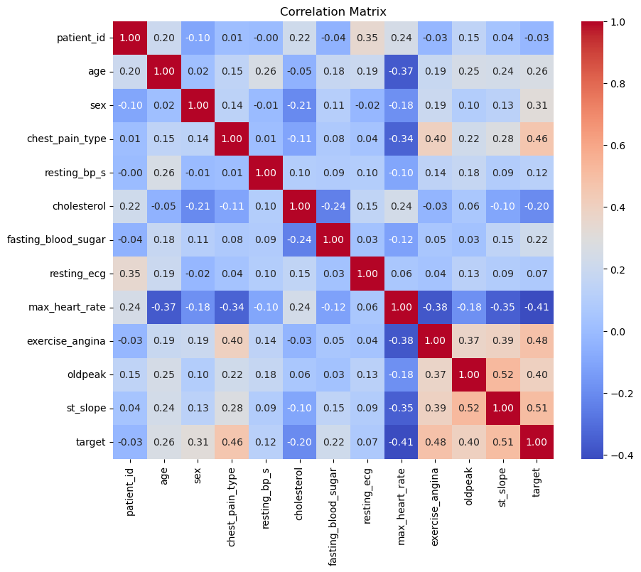
correlation_matrix = df.corr()
# Print the Correlation Table
print("Correlation Table:")
print(correlation_matrix)
Correlation Table:
patient_id age sex chest_pain_type \
patient_id 1.000000 0.204412 -0.101410 0.008365
age 0.204412 1.000000 0.015096 0.149055
sex -0.101410 0.015096 1.000000 0.138405
chest_pain_type 0.008365 0.149055 0.138405 1.000000
resting_bp_s -0.002289 0.257692 -0.006443 0.009466
cholesterol 0.217898 -0.046472 -0.208441 -0.109396
fasting_blood_sugar -0.043809 0.178923 0.110961 0.076492
resting_ecg 0.345645 0.194595 -0.022225 0.035705
max_heart_rate 0.244382 -0.368676 -0.181837 -0.337491
exercise_angina -0.026119 0.188095 0.194380 0.403428
oldpeak 0.147227 0.245093 0.096390 0.224106
st_slope 0.044905 0.237749 0.127913 0.276949
target -0.026617 0.262029 0.311267 0.460127
resting_bp_s cholesterol fasting_blood_sugar \
patient_id -0.002289 0.217898 -0.043809
age 0.257692 -0.046472 0.178923
sex -0.006443 -0.208441 0.110961
chest_pain_type 0.009466 -0.109396 0.076492
resting_bp_s 1.000000 0.099037 0.088235
cholesterol 0.099037 1.000000 -0.239778
fasting_blood_sugar 0.088235 -0.239778 1.000000
resting_ecg 0.095860 0.150879 0.032124
max_heart_rate -0.101357 0.238028 -0.118689
exercise_angina 0.142435 -0.033261 0.053053
oldpeak 0.176111 0.057451 0.031193
st_slope 0.089384 -0.100053 0.145902
target 0.121415 -0.198366 0.216695
resting_ecg max_heart_rate exercise_angina oldpeak \
patient_id 0.345645 0.244382 -0.026119 0.147227
age 0.194595 -0.368676 0.188095 0.245093
sex -0.022225 -0.181837 0.194380 0.096390
chest_pain_type 0.035705 -0.337491 0.403428 0.224106
resting_bp_s 0.095860 -0.101357 0.142435 0.176111
cholesterol 0.150879 0.238028 -0.033261 0.057451
fasting_blood_sugar 0.032124 -0.118689 0.053053 0.031193
resting_ecg 1.000000 0.058812 0.037821 0.126023
max_heart_rate 0.058812 1.000000 -0.377691 -0.183688
exercise_angina 0.037821 -0.377691 1.000000 0.370772
oldpeak 0.126023 -0.183688 0.370772 1.000000
st_slope 0.093629 -0.350750 0.393408 0.524639
target 0.073059 -0.413278 0.481467 0.398385
st_slope target
patient_id 0.044905 -0.026617
age 0.237749 0.262029
sex 0.127913 0.311267
chest_pain_type 0.276949 0.460127
resting_bp_s 0.089384 0.121415
cholesterol -0.100053 -0.198366
fasting_blood_sugar 0.145902 0.216695
resting_ecg 0.093629 0.073059
max_heart_rate -0.350750 -0.413278
exercise_angina 0.393408 0.481467
oldpeak 0.524639 0.398385
st_slope 1.000000 0.505608
target 0.505608 1.000000
#Getting alot of issues while pip installing for y profile, hence skipping
#Had to uninstall anaconda since alot of versions got changed
# Basic statistics
print(df.describe())
patient_id age sex chest_pain_type resting_bp_s \
count 1190.000000 1190.000000 1190.000000 1190.000000 1190.000000
mean 595.500000 53.720168 0.763866 3.232773 132.153782
std 343.667717 9.358203 0.424884 0.935480 18.368823
min 1.000000 28.000000 0.000000 1.000000 0.000000
25% 298.250000 47.000000 1.000000 3.000000 120.000000
50% 595.500000 54.000000 1.000000 4.000000 130.000000
75% 892.750000 60.000000 1.000000 4.000000 140.000000
max 1190.000000 77.000000 1.000000 4.000000 200.000000
cholesterol fasting_blood_sugar resting_ecg max_heart_rate \
count 1190.000000 1190.000000 1190.000000 1190.000000
mean 210.363866 0.213445 0.698319 139.732773
std 101.420489 0.409912 0.870359 25.517636
min 0.000000 0.000000 0.000000 60.000000
25% 188.000000 0.000000 0.000000 121.000000
50% 229.000000 0.000000 0.000000 140.500000
75% 269.750000 0.000000 2.000000 160.000000
max 603.000000 1.000000 2.000000 202.000000
exercise_angina oldpeak st_slope target
count 1190.000000 1190.000000 1190.000000 1190.000000
mean 0.387395 0.922773 1.624370 0.528571
std 0.487360 1.086337 0.610459 0.499393
min 0.000000 -2.600000 0.000000 0.000000
25% 0.000000 0.000000 1.000000 0.000000
50% 0.000000 0.600000 2.000000 1.000000
75% 1.000000 1.600000 2.000000 1.000000
max 1.000000 6.200000 3.000000 1.000000
import matplotlib.pyplot as plt
df.hist(bins=50, figsize=(14, 10))
plt.show()
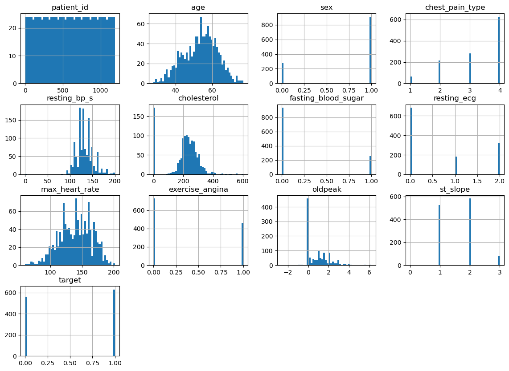
# Plot histograms for numeric features
numeric_features = ['age', 'resting_bp_s', 'cholesterol', 'max_heart_rate', 'oldpeak']
df[numeric_features].hist(bins=20, figsize=(12, 8), layout=(2, 3))
plt.suptitle('Distribution of Numeric Features')
plt.show()
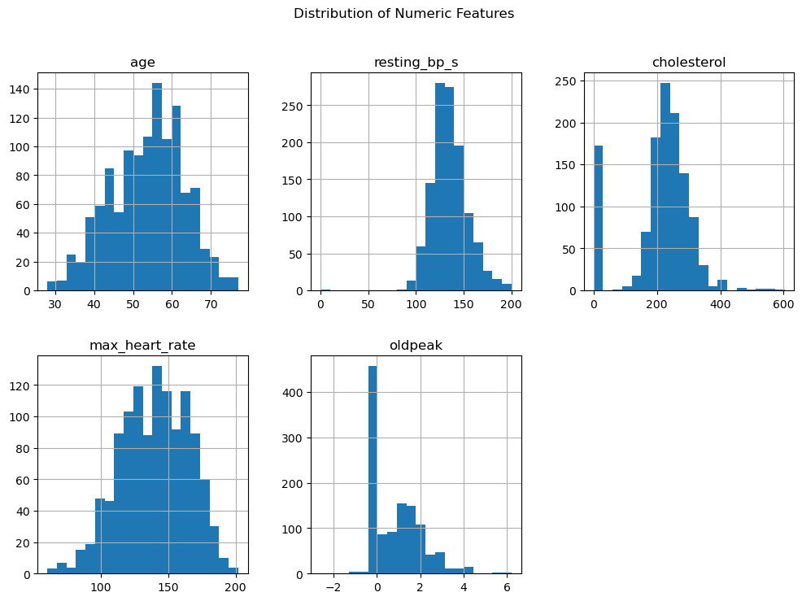
# Boxplots for numeric features by target
for col in numeric_features:
plt.figure(figsize=(8, 4))
sns.boxplot(data=df, x='target', y=col)
plt.title(f'{col} by Target')
plt.show()
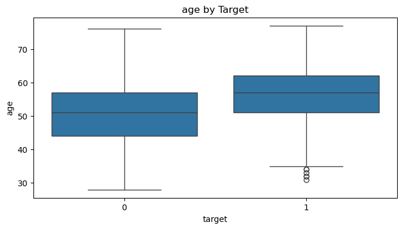
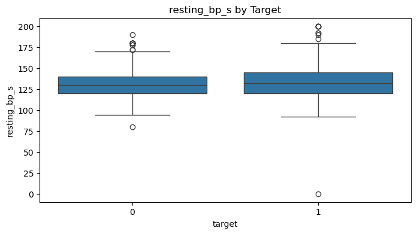
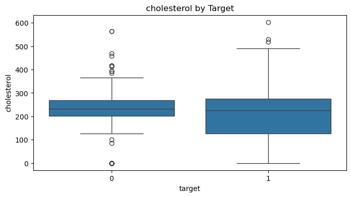
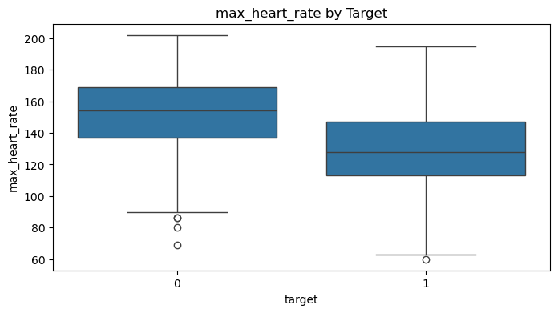
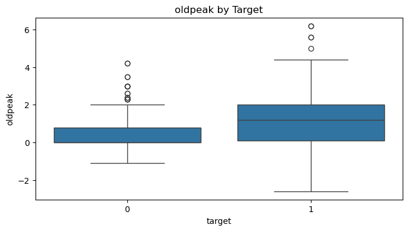
# Pair plot
sns.pairplot(df, hue='target', diag_kind='kde', corner=True)
plt.suptitle('Pair Plot of Features and Target', y=1.02)
plt.show()
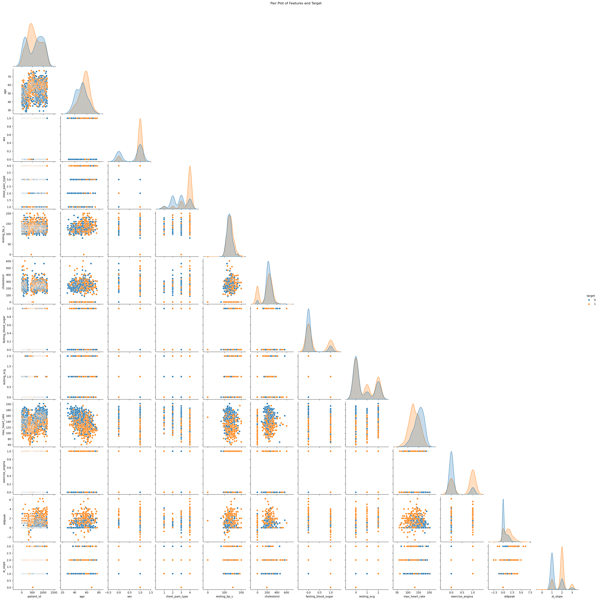
# Cat features distribution
categorical_features = ['sex', 'chest_pain_type', 'fasting_blood_sugar', 'resting_ecg', 'exercise_angina', 'st_slope']
for col in categorical_features:
sns.countplot(data=df, x=col, hue='target')
plt.title(f'{col} Distribution by Target')
plt.legend(title='Target')
plt.show()
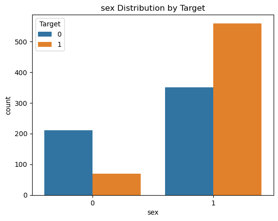
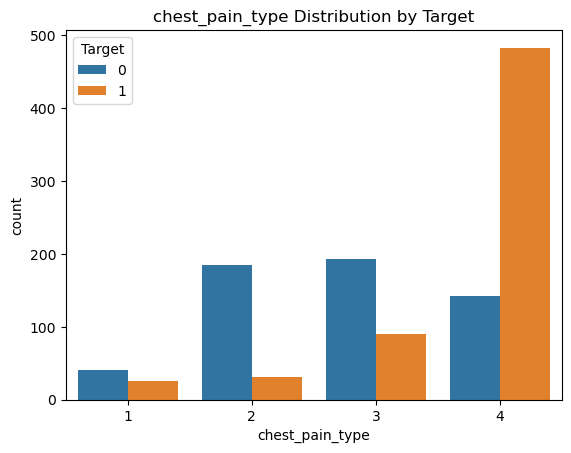
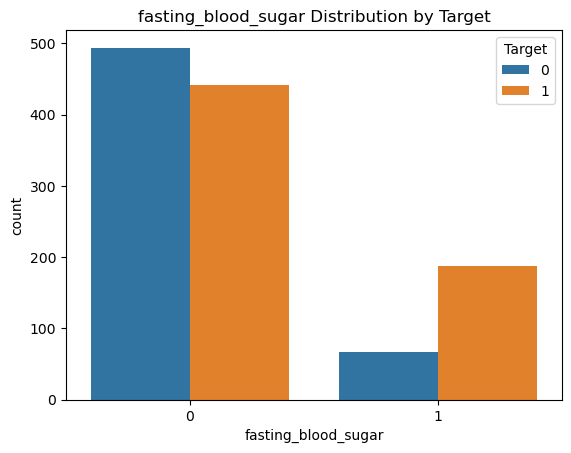
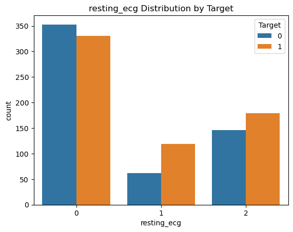
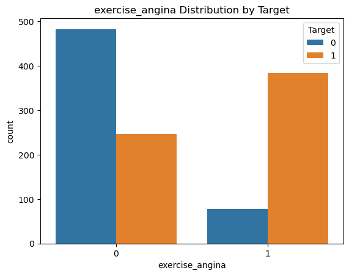
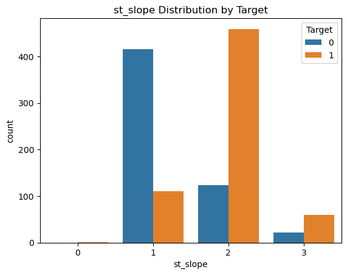
# Boxplots for outlier detection
for col in numeric_features:
sns.boxplot(data=df, x=col)
plt.title(f'Outlier Detection for {col}')
plt.show()
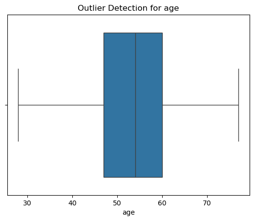
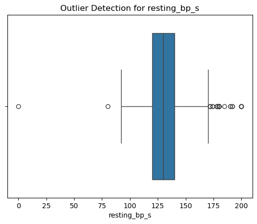
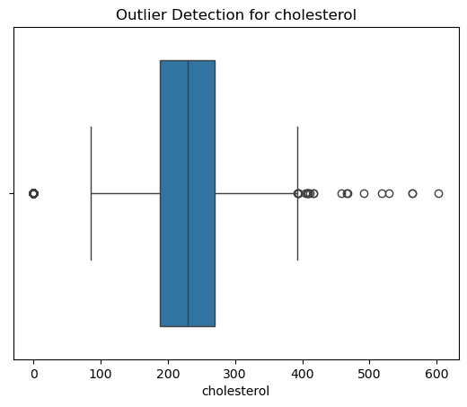
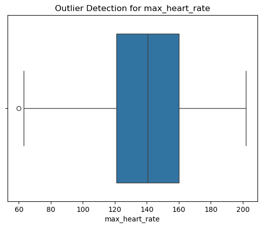
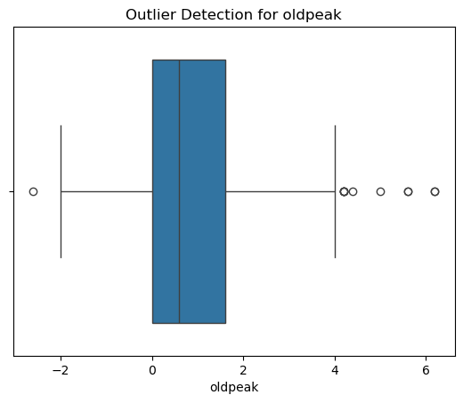
Explore the data to determine if you need to stratify it by some attribute when doing train/test split. Perform the train/test split.#
# Check the distribution of the target variable
print("Distribution of target variable:")
print(df['target'].value_counts(normalize=True))
# Visualize the distribution
import seaborn as sns
import matplotlib.pyplot as plt
sns.countplot(x='target', data=df)
plt.title("Distribution of Target Variable")
plt.show()
Distribution of target variable:
target
1 0.528571
0 0.471429
Name: proportion, dtype: float64
# Distribution of categorical variables
categorical_columns = ['sex', 'chest_pain_type', 'exercise_angina']
for col in categorical_columns:
print(f"Distribution of {col}:")
print(df[col].value_counts(normalize=True))
print()
Distribution of sex:
sex
1 0.763866
0 0.236134
Name: proportion, dtype: float64
Distribution of chest_pain_type:
chest_pain_type
4 0.525210
3 0.237815
2 0.181513
1 0.055462
Name: proportion, dtype: float64
Distribution of exercise_angina:
exercise_angina
0 0.612605
1 0.387395
Name: proportion, dtype: float64
Observations:
Sex: 76% are males (1), while 24% are females (0). No significant imbalance requiring stratification for this attribute.
Chest_pain_type: Class 4 (asymptomatic) is the most common (52%), followed by 3 (24%), 2 (18%), and 1 (5%).
Exercise_angina: Majority (61%) of the data represents individuals without exercise-induced angina (0), while 39% have it (1). The imbalance is not severe but could be stratified if necessary.
Target: The target variable is also balanced but we will still stratify to proportionally represnt.
# I have stratified the y (pred) for balance below.
Experiment #1: Create a pipeline for preprocessing (StandardScaler, MinMaxScaler, LogTransformation, OneHotEncoding) and Logistic Regression. Log F1-score/(TP,TN,FN,FP) in MLFlow on DagsHub. – Cross validation 3/10 folds. Results—mean/std of CV results and results on the whole training data – add in parameter hyper tuning#
%pip install -q dagshub mlflow
Note: you may need to restart the kernel to use updated packages.
import dagshub
dagshub.init(repo_owner='rohanjain127', repo_name='my-first-repo', mlflow=True)
Accessing as rohanjain127
Initialized MLflow to track repo "rohanjain127/my-first-repo"
Repository rohanjain127/my-first-repo initialized!
# Observation - Need to handle these
# patient_id: Irrelevant for modeling (acts as an identifier).
# resting_ecg: Very weak correlation with target
# Consider dropping one of st_slope or oldpeak due to high inter-correlation (0.524).
# resting_bp_s values of 0.
# cholesterol values of 0.
# oldpeak values below 0.
import pandas as pd
import numpy as np
from sklearn.model_selection import train_test_split, StratifiedKFold, GridSearchCV
from sklearn.preprocessing import StandardScaler, MinMaxScaler, OneHotEncoder, FunctionTransformer
from sklearn.compose import ColumnTransformer
from sklearn.pipeline import Pipeline
from sklearn.linear_model import LogisticRegression
from sklearn.metrics import f1_score, confusion_matrix
import mlflow
# Replace 0 values in 'resting_bp_s' and 'cholesterol' with NaN for imputation
df['resting_bp_s'] = df['resting_bp_s'].replace(0, np.nan)
df['cholesterol'] = df['cholesterol'].replace(0, np.nan)
# Replace negative values in 'oldpeak' with 0
df['oldpeak'] = df['oldpeak'].clip(lower=0)
# Impute missing values with median
df['resting_bp_s'].fillna(df['resting_bp_s'].median(), inplace=True)
df['cholesterol'].fillna(df['cholesterol'].median(), inplace=True)
# Drop irrelevant columns
df = df.drop(columns=['patient_id'], errors='ignore')
# Step 2: Preprocessing Pipeline
numeric_features = ['age', 'resting_bp_s', 'cholesterol', 'max_heart_rate', 'oldpeak']
categorical_features = ['sex', 'fasting_blood_sugar', 'exercise_angina', 'chest_pain_type', 'resting_ecg', 'st_slope']
# Define transformations
log_transformer = FunctionTransformer(np.log1p, validate=True) # Log transformation (log(x+1) to handle zeros)
scaler = StandardScaler()
minmax_scaler = MinMaxScaler()
categorical_transformer = OneHotEncoder(drop='first', sparse_output=False)
/var/folders/88/h6q1hd0558n2s59lz2g0xx640000gn/T/ipykernel_95383/3640421178.py:19: FutureWarning: A value is trying to be set on a copy of a DataFrame or Series through chained assignment using an inplace method.
The behavior will change in pandas 3.0. This inplace method will never work because the intermediate object on which we are setting values always behaves as a copy.
For example, when doing 'df[col].method(value, inplace=True)', try using 'df.method({col: value}, inplace=True)' or df[col] = df[col].method(value) instead, to perform the operation inplace on the original object.
df['resting_bp_s'].fillna(df['resting_bp_s'].median(), inplace=True)
/var/folders/88/h6q1hd0558n2s59lz2g0xx640000gn/T/ipykernel_95383/3640421178.py:20: FutureWarning: A value is trying to be set on a copy of a DataFrame or Series through chained assignment using an inplace method.
The behavior will change in pandas 3.0. This inplace method will never work because the intermediate object on which we are setting values always behaves as a copy.
For example, when doing 'df[col].method(value, inplace=True)', try using 'df.method({col: value}, inplace=True)' or df[col] = df[col].method(value) instead, to perform the operation inplace on the original object.
df['cholesterol'].fillna(df['cholesterol'].median(), inplace=True)
df.head()
| age | sex | chest_pain_type | resting_bp_s | cholesterol | fasting_blood_sugar | resting_ecg | max_heart_rate | exercise_angina | oldpeak | st_slope | target | |
|---|---|---|---|---|---|---|---|---|---|---|---|---|
| 0 | 40 | 1 | 2 | 140.0 | 289.0 | 0 | 0 | 172 | 0 | 0.0 | 1 | 0 |
| 1 | 49 | 0 | 3 | 160.0 | 180.0 | 0 | 0 | 156 | 0 | 1.0 | 2 | 1 |
| 2 | 37 | 1 | 2 | 130.0 | 283.0 | 0 | 1 | 98 | 0 | 0.0 | 1 | 0 |
| 3 | 48 | 0 | 4 | 138.0 | 214.0 | 0 | 0 | 108 | 1 | 1.5 | 2 | 1 |
| 4 | 54 | 1 | 3 | 150.0 | 195.0 | 0 | 0 | 122 | 0 | 0.0 | 1 | 0 |
# Combine transformations into preprocessors
preprocessor = ColumnTransformer(
transformers=[
('log', log_transformer, numeric_features), # Apply log transformation
('scale', scaler, numeric_features), # StandardScaler
('minmax', minmax_scaler, numeric_features), # MinMaxScaler
('cat', categorical_transformer, categorical_features)
]
)
# Apply preprocessing to the entire dataset before splitting
X = preprocessor.fit_transform(df.drop(columns=['target']))
y = df['target']
# Get transformed column names
encoded_columns = preprocessor.named_transformers_['cat'].get_feature_names_out(categorical_features)
all_columns = (
["log_" + col for col in numeric_features] +
["scale_" + col for col in numeric_features] +
["minmax_" + col for col in numeric_features] +
list(encoded_columns)
)
X = pd.DataFrame(X, columns=all_columns)
# Step 3: Train-Test Split
X_train, X_test, y_train, y_test = train_test_split(X, y, test_size=0.2, random_state=42, stratify=y)
X_train.head()
| log_age | log_resting_bp_s | log_cholesterol | log_max_heart_rate | log_oldpeak | scale_age | scale_resting_bp_s | scale_cholesterol | scale_max_heart_rate | scale_oldpeak | ... | fasting_blood_sugar_1 | exercise_angina_1 | chest_pain_type_2 | chest_pain_type_3 | chest_pain_type_4 | resting_ecg_1 | resting_ecg_2 | st_slope_1 | st_slope_2 | st_slope_3 | |
|---|---|---|---|---|---|---|---|---|---|---|---|---|---|---|---|---|---|---|---|---|---|
| 360 | 3.988984 | 4.663439 | 5.484797 | 4.753590 | 0.000000 | -0.076988 | -1.518258 | -0.095409 | -0.969650 | -0.873002 | ... | 0.0 | 0.0 | 0.0 | 1.0 | 0.0 | 0.0 | 0.0 | 0.0 | 1.0 | 0.0 |
| 842 | 3.737670 | 4.912655 | 5.318120 | 4.890349 | 0.000000 | -1.359825 | 0.152420 | -0.794037 | -0.303164 | -0.873002 | ... | 0.0 | 0.0 | 1.0 | 0.0 | 0.0 | 0.0 | 0.0 | 0.0 | 1.0 | 0.0 |
| 54 | 3.970292 | 4.875197 | 5.198497 | 4.948760 | 0.916291 | -0.183891 | -0.126026 | -1.228319 | 0.010477 | 0.529742 | ... | 0.0 | 1.0 | 0.0 | 0.0 | 1.0 | 0.0 | 0.0 | 0.0 | 1.0 | 0.0 |
| 528 | 4.127134 | 4.941642 | 5.648974 | 4.912655 | 0.262364 | 0.778236 | 0.375177 | 0.716510 | -0.185549 | -0.592453 | ... | 0.0 | 0.0 | 1.0 | 0.0 | 0.0 | 0.0 | 0.0 | 1.0 | 0.0 | 0.0 |
| 969 | 3.688879 | 4.948760 | 5.774552 | 5.209486 | 0.000000 | -1.573631 | 0.430866 | 1.434020 | 1.657089 | -0.873002 | ... | 0.0 | 0.0 | 0.0 | 1.0 | 0.0 | 0.0 | 1.0 | 1.0 | 0.0 | 0.0 |
5 rows × 26 columns
y_train.head()
360 1
842 0
54 0
528 0
969 0
Name: target, dtype: int64
# Step 4: Pipeline with Logistic Regression
pipeline = Pipeline([
('classifier', LogisticRegression(max_iter=500, random_state=42))
])
# Step 5: Hyperparameter Tuning and Cross-Validation
param_grid = {
'classifier__C': [0.01, 0.1, 1, 10],
'classifier__penalty': ['l1', 'l2'],
'classifier__solver': ['liblinear']
}
# Option for 3-Fold Cross-Validation
cv_3fold = StratifiedKFold(n_splits=3, shuffle=True, random_state=42)
cv_10fold = StratifiedKFold(n_splits=10, shuffle=True, random_state=42)
# Choose CV folds dynamically (change `cv` as needed)
cv = cv_10fold # Change to cv_3fold for 3-fold CV
grid_search = GridSearchCV(pipeline, param_grid, cv=cv, scoring='f1', n_jobs=-1)
# Fit the model
grid_search.fit(X_train, y_train)
# Best model and parameters
best_model = grid_search.best_estimator_
best_params = grid_search.best_params_
# Evaluate on Training Data
y_train_pred = best_model.predict(X_train)
f1_train = f1_score(y_train, y_train_pred)
cm_train = confusion_matrix(y_train, y_train_pred)
tn_train, fp_train, fn_train, tp_train = cm_train.ravel()
# Evaluate on Test Data
y_test_pred = best_model.predict(X_test)
f1_test = f1_score(y_test, y_test_pred)
cm_test = confusion_matrix(y_test, y_test_pred)
tn_test, fp_test, fn_test, tp_test = cm_test.ravel()
# Step 6: Log Results in MLFlow
mlflow.set_tracking_uri("https://dagshub.com/rohanjain127/my-first-repo.mlflow") # Replace with your DagsHub details
mlflow.set_experiment("Heart Disease Experiment")
with mlflow.start_run(run_name="LogisticRegression1st"):
# Log best parameters and metrics
mlflow.log_params(best_params)
mlflow.log_metric("Train F1 Score", f1_train)
mlflow.log_metric("Test F1 Score", f1_test)
mlflow.log_metric("Train True Positives", tp_train)
mlflow.log_metric("Train True Negatives", tn_train)
mlflow.log_metric("Train False Positives", fp_train)
mlflow.log_metric("Train False Negatives", fn_train)
mlflow.log_metric("Test True Positives", tp_test)
mlflow.log_metric("Test True Negatives", tn_test)
mlflow.log_metric("Test False Positives", fp_test)
mlflow.log_metric("Test False Negatives", fn_test)
# Log model
mlflow.sklearn.log_model(best_model, "Logistic Regression Model")
# Print Results
print("\n=== Model Parameters ===")
print("Best Parameters:", best_params)
print("\n=== Training Metrics ===")
print(f"Training F1 Score: {f1_train}")
print(f"Training Confusion Matrix: TP={tp_train}, TN={tn_train}, FP={fp_train}, FN={fn_train}")
print("\n=== Test Metrics ===")
print(f"Test F1 Score: {f1_test}")
print(f"Test Confusion Matrix: TP={tp_test}, TN={tn_test}, FP={fp_test}, FN={fn_test}")
2024/12/21 18:30:52 WARNING mlflow.models.model: Model logged without a signature and input example. Please set `input_example` parameter when logging the model to auto infer the model signature.
🏃 View run LogisticRegression1st at: https://dagshub.com/rohanjain127/my-first-repo.mlflow/#/experiments/1/runs/01d43f5e5a8f45e8aacee093b31b0de1
🧪 View experiment at: https://dagshub.com/rohanjain127/my-first-repo.mlflow/#/experiments/1
=== Model Parameters ===
Best Parameters: {'classifier__C': 1, 'classifier__penalty': 'l2', 'classifier__solver': 'liblinear'}
=== Training Metrics ===
Training F1 Score: 0.8652900688298918
Training Confusion Matrix: TP=440, TN=375, FP=74, FN=63
=== Test Metrics ===
Test F1 Score: 0.8682170542635659
Test Confusion Matrix: TP=112, TN=92, FP=20, FN=14
Experiment #2: Create a pipeline for preprocessing and use LogisticRegression, RidgeClassifier, RandomForestClassifier, and XGBClassifier. Log results in MLFlow on DagsHub.#
!pip install xgboost
Requirement already satisfied: xgboost in /opt/anaconda3/lib/python3.12/site-packages (2.1.3)
Requirement already satisfied: numpy in /opt/anaconda3/lib/python3.12/site-packages (from xgboost) (1.26.4)
Requirement already satisfied: scipy in /opt/anaconda3/lib/python3.12/site-packages (from xgboost) (1.13.1)
import xgboost
print(xgboost.__version__)
2.1.3
import numpy as np
from sklearn.model_selection import StratifiedKFold, cross_val_score
from sklearn.linear_model import LogisticRegression, RidgeClassifier
from sklearn.ensemble import RandomForestClassifier
from xgboost import XGBClassifier
from sklearn.metrics import f1_score, confusion_matrix
import mlflow
import mlflow.sklearn
import mlflow.xgboost
import joblib
import warnings
warnings.filterwarnings('ignore', category=UserWarning, module='xgboost')
# Step 4: Classifiers to Test
classifiers = {
"LogisticRegression2nd": LogisticRegression(max_iter=500, random_state=42),
"RidgeClassifier1st": RidgeClassifier(random_state=42),
"RandomForestClassifier1st": RandomForestClassifier(random_state=42),
"XGBClassifier1st": XGBClassifier(use_label_encoder=False, eval_metric='logloss', random_state=42)
}
# Store trained models separately
trained_models = {}
mlflow.set_tracking_uri("https://dagshub.com/rohanjain127/my-first-repo.mlflow")
mlflow.set_experiment("Heart Disease Experiment")
for name, clf in classifiers.items():
print(f"\nRunning {name}...")
# Cross-validation
cv = StratifiedKFold(n_splits=10, shuffle=True, random_state=42)
f1_scores = cross_val_score(clf, X_train, y_train, cv=cv, scoring='f1', n_jobs=-1)
# Fit on training data
clf.fit(X_train, y_train)
# Save trained model to the new dictionary
trained_models[name] = clf # Avoid overwriting the original 'classifiers' dictionary
# Predictions
y_train_pred = clf.predict(X_train)
y_test_pred = clf.predict(X_test)
# Metrics
f1_train = f1_score(y_train, y_train_pred)
f1_test = f1_score(y_test, y_test_pred)
cm_train = confusion_matrix(y_train, y_train_pred)
cm_test = confusion_matrix(y_test, y_test_pred)
# Log to MLFlow
with mlflow.start_run(run_name=name):
mlflow.log_param("Classifier", name)
mlflow.log_metric("Train F1 Score", f1_train)
mlflow.log_metric("Test F1 Score", f1_test)
mlflow.log_metric("CV F1 Score Mean", np.mean(f1_scores))
mlflow.log_metric("CV F1 Score Std", np.std(f1_scores))
# Log the model
if name == "XGBClassifier1st":
mlflow.xgboost.log_model(clf, "model")
else:
mlflow.sklearn.log_model(clf, "model")
print(f"{name}:")
print(f"Train F1 Score: {f1_train}")
print(f"Test F1 Score: {f1_test}")
print(f"CV F1 Score Mean: {np.mean(f1_scores):.4f}")
print(f"CV F1 Score Std: {np.std(f1_scores):.4f}")
# Step 6: Select and Save the Best Model
best_model = trained_models.get("XGBClassifier1st", None) # Use .get() to avoid KeyError
if best_model:
model_path = '/Users/rohanjain/Desktop/Sem1/Prog_DB/Final_project/heart_disease_best_model.joblib'
joblib.dump(best_model, model_path)
print(f"\nBest Model (XGBClassifier1st) saved to: {model_path}")
else:
print("XGBClassifier1st not found in trained models.")
Running LogisticRegression2nd...
2024/12/21 18:31:04 WARNING mlflow.models.model: Model logged without a signature and input example. Please set `input_example` parameter when logging the model to auto infer the model signature.
🏃 View run LogisticRegression2nd at: https://dagshub.com/rohanjain127/my-first-repo.mlflow/#/experiments/1/runs/64e3aaba1c954e0fa44d4ba035a08710
🧪 View experiment at: https://dagshub.com/rohanjain127/my-first-repo.mlflow/#/experiments/1
LogisticRegression2nd:
Train F1 Score: 0.8652900688298918
Test F1 Score: 0.8682170542635659
CV F1 Score Mean: 0.8629
CV F1 Score Std: 0.0372
Running RidgeClassifier1st...
2024/12/21 18:31:19 WARNING mlflow.models.model: Model logged without a signature and input example. Please set `input_example` parameter when logging the model to auto infer the model signature.
🏃 View run RidgeClassifier1st at: https://dagshub.com/rohanjain127/my-first-repo.mlflow/#/experiments/1/runs/ccc63abe974f4420b6d118d0b6537bee
🧪 View experiment at: https://dagshub.com/rohanjain127/my-first-repo.mlflow/#/experiments/1
RidgeClassifier1st:
Train F1 Score: 0.8630541871921182
Test F1 Score: 0.8715953307392996
CV F1 Score Mean: 0.8533
CV F1 Score Std: 0.0311
Running RandomForestClassifier1st...
2024/12/21 18:31:34 WARNING mlflow.models.model: Model logged without a signature and input example. Please set `input_example` parameter when logging the model to auto infer the model signature.
🏃 View run RandomForestClassifier1st at: https://dagshub.com/rohanjain127/my-first-repo.mlflow/#/experiments/1/runs/341812e9f3ee44aa8b4cc3734f4a41db
🧪 View experiment at: https://dagshub.com/rohanjain127/my-first-repo.mlflow/#/experiments/1
RandomForestClassifier1st:
Train F1 Score: 1.0
Test F1 Score: 0.9236947791164659
CV F1 Score Mean: 0.9178
CV F1 Score Std: 0.0192
Running XGBClassifier1st...
/opt/anaconda3/lib/python3.12/site-packages/xgboost/core.py:158: UserWarning: [18:31:42] WARNING: /Users/runner/work/xgboost/xgboost/src/learner.cc:740:
Parameters: { "use_label_encoder" } are not used.
warnings.warn(smsg, UserWarning)
/opt/anaconda3/lib/python3.12/site-packages/xgboost/core.py:158: UserWarning: [18:31:42] WARNING: /Users/runner/work/xgboost/xgboost/src/learner.cc:740:
Parameters: { "use_label_encoder" } are not used.
warnings.warn(smsg, UserWarning)
/opt/anaconda3/lib/python3.12/site-packages/xgboost/core.py:158: UserWarning: [18:31:42] WARNING: /Users/runner/work/xgboost/xgboost/src/learner.cc:740:
Parameters: { "use_label_encoder" } are not used.
warnings.warn(smsg, UserWarning)
/opt/anaconda3/lib/python3.12/site-packages/xgboost/core.py:158: UserWarning: [18:31:42] WARNING: /Users/runner/work/xgboost/xgboost/src/learner.cc:740:
Parameters: { "use_label_encoder" } are not used.
warnings.warn(smsg, UserWarning)
/opt/anaconda3/lib/python3.12/site-packages/xgboost/core.py:158: UserWarning: [18:31:42] WARNING: /Users/runner/work/xgboost/xgboost/src/learner.cc:740:
Parameters: { "use_label_encoder" } are not used.
warnings.warn(smsg, UserWarning)
/opt/anaconda3/lib/python3.12/site-packages/xgboost/core.py:158: UserWarning: [18:31:42] WARNING: /Users/runner/work/xgboost/xgboost/src/learner.cc:740:
Parameters: { "use_label_encoder" } are not used.
warnings.warn(smsg, UserWarning)
/opt/anaconda3/lib/python3.12/site-packages/xgboost/core.py:158: UserWarning: [18:31:42] WARNING: /Users/runner/work/xgboost/xgboost/src/learner.cc:740:
Parameters: { "use_label_encoder" } are not used.
warnings.warn(smsg, UserWarning)
/opt/anaconda3/lib/python3.12/site-packages/xgboost/core.py:158: UserWarning: [18:31:42] WARNING: /Users/runner/work/xgboost/xgboost/src/learner.cc:740:
Parameters: { "use_label_encoder" } are not used.
warnings.warn(smsg, UserWarning)
/opt/anaconda3/lib/python3.12/site-packages/xgboost/core.py:158: UserWarning: [18:31:42] WARNING: /Users/runner/work/xgboost/xgboost/src/learner.cc:740:
Parameters: { "use_label_encoder" } are not used.
warnings.warn(smsg, UserWarning)
/opt/anaconda3/lib/python3.12/site-packages/xgboost/core.py:158: UserWarning: [18:31:42] WARNING: /Users/runner/work/xgboost/xgboost/src/learner.cc:740:
Parameters: { "use_label_encoder" } are not used.
warnings.warn(smsg, UserWarning)
2024/12/21 18:31:49 WARNING mlflow.models.model: Model logged without a signature and input example. Please set `input_example` parameter when logging the model to auto infer the model signature.
🏃 View run XGBClassifier1st at: https://dagshub.com/rohanjain127/my-first-repo.mlflow/#/experiments/1/runs/3e374e875f684e75b6bbecdad8fe081d
🧪 View experiment at: https://dagshub.com/rohanjain127/my-first-repo.mlflow/#/experiments/1
XGBClassifier1st:
Train F1 Score: 1.0
Test F1 Score: 0.9444444444444444
CV F1 Score Mean: 0.9306
CV F1 Score Std: 0.0226
Best Model (XGBClassifier1st) saved to: /Users/rohanjain/Desktop/Sem1/Prog_DB/Final_project/heart_disease_best_model.joblib
X_train.head()
| log_age | log_resting_bp_s | log_cholesterol | log_max_heart_rate | log_oldpeak | scale_age | scale_resting_bp_s | scale_cholesterol | scale_max_heart_rate | scale_oldpeak | ... | fasting_blood_sugar_1 | exercise_angina_1 | chest_pain_type_2 | chest_pain_type_3 | chest_pain_type_4 | resting_ecg_1 | resting_ecg_2 | st_slope_1 | st_slope_2 | st_slope_3 | |
|---|---|---|---|---|---|---|---|---|---|---|---|---|---|---|---|---|---|---|---|---|---|
| 360 | 3.988984 | 4.663439 | 5.484797 | 4.753590 | 0.000000 | -0.076988 | -1.518258 | -0.095409 | -0.969650 | -0.873002 | ... | 0.0 | 0.0 | 0.0 | 1.0 | 0.0 | 0.0 | 0.0 | 0.0 | 1.0 | 0.0 |
| 842 | 3.737670 | 4.912655 | 5.318120 | 4.890349 | 0.000000 | -1.359825 | 0.152420 | -0.794037 | -0.303164 | -0.873002 | ... | 0.0 | 0.0 | 1.0 | 0.0 | 0.0 | 0.0 | 0.0 | 0.0 | 1.0 | 0.0 |
| 54 | 3.970292 | 4.875197 | 5.198497 | 4.948760 | 0.916291 | -0.183891 | -0.126026 | -1.228319 | 0.010477 | 0.529742 | ... | 0.0 | 1.0 | 0.0 | 0.0 | 1.0 | 0.0 | 0.0 | 0.0 | 1.0 | 0.0 |
| 528 | 4.127134 | 4.941642 | 5.648974 | 4.912655 | 0.262364 | 0.778236 | 0.375177 | 0.716510 | -0.185549 | -0.592453 | ... | 0.0 | 0.0 | 1.0 | 0.0 | 0.0 | 0.0 | 0.0 | 1.0 | 0.0 | 0.0 |
| 969 | 3.688879 | 4.948760 | 5.774552 | 5.209486 | 0.000000 | -1.573631 | 0.430866 | 1.434020 | 1.657089 | -0.873002 | ... | 0.0 | 0.0 | 0.0 | 1.0 | 0.0 | 0.0 | 1.0 | 1.0 | 0.0 | 0.0 |
5 rows × 26 columns
# Get all column names after preprocessing
XGBClassifier1st_column_names = X_train.columns.tolist()
# Print the column names
print(XGBClassifier1st_column_names)
['log_age', 'log_resting_bp_s', 'log_cholesterol', 'log_max_heart_rate', 'log_oldpeak', 'scale_age', 'scale_resting_bp_s', 'scale_cholesterol', 'scale_max_heart_rate', 'scale_oldpeak', 'minmax_age', 'minmax_resting_bp_s', 'minmax_cholesterol', 'minmax_max_heart_rate', 'minmax_oldpeak', 'sex_1', 'fasting_blood_sugar_1', 'exercise_angina_1', 'chest_pain_type_2', 'chest_pain_type_3', 'chest_pain_type_4', 'resting_ecg_1', 'resting_ecg_2', 'st_slope_1', 'st_slope_2', 'st_slope_3']
Experiment #3: Perform feature engineering and attribute combination. Log results in MLFlow.#
df = df_combined
def clean_column_names(df):
df.columns = df.columns.str.replace(' ', '_').str.lower()
return df
df = clean_column_names(df)
df.head()
| patient_id | age | sex | chest_pain_type | resting_bp_s | cholesterol | fasting_blood_sugar | resting_ecg | max_heart_rate | exercise_angina | oldpeak | st_slope | target | |
|---|---|---|---|---|---|---|---|---|---|---|---|---|---|
| 0 | 1 | 40 | 1 | 2 | 140.0 | 289.0 | 0 | 0 | 172 | 0 | 0.0 | 1 | 0 |
| 1 | 2 | 49 | 0 | 3 | 160.0 | 180.0 | 0 | 0 | 156 | 0 | 1.0 | 2 | 1 |
| 2 | 3 | 37 | 1 | 2 | 130.0 | 283.0 | 0 | 1 | 98 | 0 | 0.0 | 1 | 0 |
| 3 | 4 | 48 | 0 | 4 | 138.0 | 214.0 | 0 | 0 | 108 | 1 | 1.5 | 2 | 1 |
| 4 | 5 | 54 | 1 | 3 | 150.0 | 195.0 | 0 | 0 | 122 | 0 | 0.0 | 1 | 0 |
# Step 1: Data Cleaning (Reused from previous experiments)
df['resting_bp_s'] = df['resting_bp_s'].replace(0, np.nan)
df['cholesterol'] = df['cholesterol'].replace(0, np.nan)
df['oldpeak'] = df['oldpeak'].clip(lower=0)
df['resting_bp_s'].fillna(df['resting_bp_s'].median(), inplace=True)
df['cholesterol'].fillna(df['cholesterol'].median(), inplace=True)
df = df.drop(columns=['patient_id'], errors='ignore')
# Step 2: Feature Engineering
df['bp_cholesterol_interaction'] = df['resting_bp_s'] * df['cholesterol']
df['age_group'] = pd.cut(df['age'], bins=[0, 40, 60, 80], labels=['Young', 'Middle-aged', 'Senior'])
df['cholesterol_squared'] = df['cholesterol'] ** 2
df['bp_hr_ratio'] = df['resting_bp_s'] / df['max_heart_rate']
df['combined_health_score'] = df[['resting_bp_s', 'cholesterol', 'max_heart_rate']].mean(axis=1)
# Step 3: Preprocessing
numeric_features = ['age', 'resting_bp_s', 'cholesterol', 'max_heart_rate', 'oldpeak',
'bp_cholesterol_interaction', 'cholesterol_squared', 'bp_hr_ratio', 'combined_health_score']
categorical_features = ['sex', 'fasting_blood_sugar', 'exercise_angina', 'chest_pain_type', 'resting_ecg', 'st_slope', 'age_group']
numeric_transformer = StandardScaler()
categorical_transformer = OneHotEncoder(drop='first', sparse_output=False)
preprocessor = ColumnTransformer(
transformers=[
('num', numeric_transformer, numeric_features),
('cat', categorical_transformer, categorical_features)
]
)
# Apply preprocessing to the entire dataset and convert back to DataFrame
X = preprocessor.fit_transform(df.drop(columns=['target']))
# Retrieve column names after transformation
encoded_columns = preprocessor.named_transformers_['cat'].get_feature_names_out(categorical_features)
all_columns = numeric_features + list(encoded_columns)
# Convert to DataFrame with appropriate column names
X = pd.DataFrame(X, columns=all_columns)
y = df['target']
# Step 4: Train-Test Split
X_train, X_test, y_train, y_test = train_test_split(X, y, test_size=0.2, random_state=42, stratify=y)
# Step 5: Logistic Regression (Example Model)
model = LogisticRegression(max_iter=500, random_state=42)
model.fit(X_train, y_train)
# Predictions
y_train_pred = model.predict(X_train)
y_test_pred = model.predict(X_test)
# Metrics
f1_train = f1_score(y_train, y_train_pred)
f1_test = f1_score(y_test, y_test_pred)
cm_train = confusion_matrix(y_train, y_train_pred)
cm_test = confusion_matrix(y_test, y_test_pred)
tn_train, fp_train, fn_train, tp_train = cm_train.ravel()
tn_test, fp_test, fn_test, tp_test = cm_test.ravel()
# Step 6: Log Results in MLFlow
mlflow.set_tracking_uri("https://dagshub.com/rohanjain127/my-first-repo.mlflow")
mlflow.set_experiment("Heart Disease Experiment")
with mlflow.start_run(run_name="LogisticRegression_FE"):
mlflow.log_metric("Train F1 Score", f1_train)
mlflow.log_metric("Test F1 Score", f1_test)
mlflow.log_metric("Train True Positives", cm_train[1, 1])
mlflow.log_metric("Train True Negatives", cm_train[0, 0])
mlflow.log_metric("Train False Positives", cm_train[0, 1])
mlflow.log_metric("Train False Negatives", cm_train[1, 0])
mlflow.log_metric("Test True Positives", cm_test[1, 1])
mlflow.log_metric("Test True Negatives", cm_test[0, 0])
mlflow.log_metric("Test False Positives", cm_test[0, 1])
mlflow.log_metric("Test False Negatives", cm_test[1, 0])
mlflow.sklearn.log_model(model, "LR with Feature Engineering")
mlflow.log_param("Features", all_columns)
print("Feature Engineering Experiment completed and logged in MLFlow.")
# Print results
print("\n--- Feature Engineering Results ---")
print(f"Train F1 Score: {f1_train}")
print(f"Test F1 Score: {f1_test}")
print("\nTraining Confusion Matrix:")
print(f"TP: {tp_train}, TN: {tn_train}, FP: {fp_train}, FN: {fn_train}")
print("\nTest Confusion Matrix:")
print(f"TP: {tp_test}, TN: {tn_test}, FP: {fp_test}, FN: {fn_test}")
/var/folders/88/h6q1hd0558n2s59lz2g0xx640000gn/T/ipykernel_95383/4116694033.py:5: FutureWarning: A value is trying to be set on a copy of a DataFrame or Series through chained assignment using an inplace method.
The behavior will change in pandas 3.0. This inplace method will never work because the intermediate object on which we are setting values always behaves as a copy.
For example, when doing 'df[col].method(value, inplace=True)', try using 'df.method({col: value}, inplace=True)' or df[col] = df[col].method(value) instead, to perform the operation inplace on the original object.
df['resting_bp_s'].fillna(df['resting_bp_s'].median(), inplace=True)
/var/folders/88/h6q1hd0558n2s59lz2g0xx640000gn/T/ipykernel_95383/4116694033.py:6: FutureWarning: A value is trying to be set on a copy of a DataFrame or Series through chained assignment using an inplace method.
The behavior will change in pandas 3.0. This inplace method will never work because the intermediate object on which we are setting values always behaves as a copy.
For example, when doing 'df[col].method(value, inplace=True)', try using 'df.method({col: value}, inplace=True)' or df[col] = df[col].method(value) instead, to perform the operation inplace on the original object.
df['cholesterol'].fillna(df['cholesterol'].median(), inplace=True)
2024/12/21 18:32:09 WARNING mlflow.models.model: Model logged without a signature and input example. Please set `input_example` parameter when logging the model to auto infer the model signature.
🏃 View run LogisticRegression_FE at: https://dagshub.com/rohanjain127/my-first-repo.mlflow/#/experiments/1/runs/167436c2793543f295aee21f24c29e9a
🧪 View experiment at: https://dagshub.com/rohanjain127/my-first-repo.mlflow/#/experiments/1
Feature Engineering Experiment completed and logged in MLFlow.
--- Feature Engineering Results ---
Train F1 Score: 0.8644400785854617
Test F1 Score: 0.875
Training Confusion Matrix:
TP: 440, TN: 374, FP: 75, FN: 63
Test Confusion Matrix:
TP: 112, TN: 94, FP: 18, FN: 14
X_train.head()
| age | resting_bp_s | cholesterol | max_heart_rate | oldpeak | bp_cholesterol_interaction | cholesterol_squared | bp_hr_ratio | combined_health_score | sex_1 | ... | chest_pain_type_2 | chest_pain_type_3 | chest_pain_type_4 | resting_ecg_1 | resting_ecg_2 | st_slope_1 | st_slope_2 | st_slope_3 | age_group_Senior | age_group_Young | |
|---|---|---|---|---|---|---|---|---|---|---|---|---|---|---|---|---|---|---|---|---|---|
| 360 | -0.076988 | -1.518258 | -0.095409 | -0.969650 | -0.873002 | -0.834938 | -0.171930 | -0.276076 | -0.915600 | 1.0 | ... | 0.0 | 1.0 | 0.0 | 0.0 | 0.0 | 0.0 | 1.0 | 0.0 | 0.0 | 0.0 |
| 842 | -1.359825 | 0.152420 | -0.794037 | -0.303164 | -0.873002 | -0.583067 | -0.708119 | 0.140063 | -0.755106 | 1.0 | ... | 1.0 | 0.0 | 0.0 | 0.0 | 0.0 | 0.0 | 1.0 | 0.0 | 0.0 | 0.0 |
| 54 | -0.183891 | -0.126026 | -1.228319 | 0.010477 | 0.529742 | -1.040548 | -0.996283 | -0.217163 | -1.076095 | 0.0 | ... | 0.0 | 0.0 | 1.0 | 0.0 | 0.0 | 0.0 | 1.0 | 0.0 | 0.0 | 0.0 |
| 528 | 0.778236 | 0.375177 | 0.716510 | -0.185549 | -0.592453 | 0.779895 | 0.563739 | 0.166251 | 0.641195 | 1.0 | ... | 1.0 | 0.0 | 0.0 | 0.0 | 0.0 | 1.0 | 0.0 | 0.0 | 1.0 | 0.0 |
| 969 | -1.573631 | 0.430866 | 1.434020 | 1.657089 | -0.873002 | 1.419912 | 1.314555 | -0.821699 | 2.021448 | 1.0 | ... | 0.0 | 1.0 | 0.0 | 0.0 | 1.0 | 1.0 | 0.0 | 0.0 | 0.0 | 1.0 |
5 rows × 22 columns
Experiment #4: Perform feature selection using Correlation Threshold, Feature Importance, and Variance Threshold. Log results in MLFlow.#
import pandas as pd
import numpy as np
from sklearn.model_selection import train_test_split
from sklearn.preprocessing import StandardScaler, OneHotEncoder
from sklearn.compose import ColumnTransformer
from sklearn.pipeline import Pipeline
from sklearn.linear_model import LogisticRegression
from sklearn.feature_selection import VarianceThreshold, SelectFromModel
from sklearn.ensemble import RandomForestClassifier
from sklearn.metrics import f1_score, confusion_matrix
import mlflow
import matplotlib.pyplot as plt
# Step 1: Reload and Clean Data (from df_combined)
df = df_combined.copy()
def clean_column_names(df):
df.columns = df.columns.str.replace(' ', '_').str.lower()
return df
df = clean_column_names(df)
# Data Cleaning
df['resting_bp_s'] = df['resting_bp_s'].replace(0, np.nan)
df['cholesterol'] = df['cholesterol'].replace(0, np.nan)
df['oldpeak'] = df['oldpeak'].clip(lower=0)
df['resting_bp_s'].fillna(df['resting_bp_s'].median(), inplace=True)
df['cholesterol'].fillna(df['cholesterol'].median(), inplace=True)
df = df.drop(columns=['patient_id'], errors='ignore')
# Step 2: Feature Engineering
df['bp_cholesterol_interaction'] = df['resting_bp_s'] * df['cholesterol']
df['age_group'] = pd.cut(df['age'], bins=[0, 40, 60, 80], labels=['Young', 'Middle-aged', 'Senior'])
df['cholesterol_squared'] = df['cholesterol'] ** 2
df['bp_hr_ratio'] = df['resting_bp_s'] / df['max_heart_rate']
df['combined_health_score'] = df[['resting_bp_s', 'cholesterol', 'max_heart_rate']].mean(axis=1)
# Feature List
numeric_features = ['age', 'resting_bp_s', 'cholesterol', 'max_heart_rate', 'oldpeak',
'bp_cholesterol_interaction', 'cholesterol_squared', 'bp_hr_ratio', 'combined_health_score']
categorical_features = ['sex', 'fasting_blood_sugar', 'exercise_angina',
'chest_pain_type', 'resting_ecg', 'st_slope', 'age_group']
# Preprocessing: Scaling + Encoding
numeric_transformer = StandardScaler()
categorical_transformer = OneHotEncoder(drop='first', sparse_output=False)
preprocessor = ColumnTransformer(
transformers=[
('num', numeric_transformer, numeric_features),
('cat', categorical_transformer, categorical_features)
]
)
# Apply preprocessing
X = preprocessor.fit_transform(df.drop(columns=['target']))
y = df['target']
# Extract updated feature names
encoded_columns = preprocessor.named_transformers_['cat'].get_feature_names_out(categorical_features)
all_columns = numeric_features + list(encoded_columns)
# Convert to DataFrame
X = pd.DataFrame(X, columns=all_columns)
# Step 4: Train-Test Split
X_train, X_test, y_train, y_test = train_test_split(X, y, test_size=0.2, random_state=42, stratify=y)
# Print initial shape and feature names
print(f"Initial Train Data Shape: {X_train.shape}")
print(f"Initial Features: {X_train.columns.tolist()}")
# Step 5: Feature Selection
## 1. Variance Threshold
variance_thresh = VarianceThreshold(threshold=0.01)
X_train_var = variance_thresh.fit_transform(X_train)
X_test_var = variance_thresh.transform(X_test)
# Identify kept and dropped features
kept_features_var = X_train.columns[variance_thresh.get_support()]
dropped_features_var = X_train.columns.difference(kept_features_var)
print(f"\nFeatures Kept After Variance Threshold: {list(kept_features_var)}")
print(f"Features Dropped After Variance Threshold: {list(dropped_features_var)}")
print(f"After Variance Threshold: {X_train_var.shape}")
## 2. Correlation Threshold
corr_matrix = pd.DataFrame(X_train_var, columns=kept_features_var).corr().abs()
upper = corr_matrix.where(np.triu(np.ones(corr_matrix.shape), k=1).astype(bool))
to_drop_corr = [column for column in upper.columns if any(upper[column] > 0.8)]
X_train_corr = pd.DataFrame(X_train_var, columns=kept_features_var).drop(columns=to_drop_corr)
X_test_corr = pd.DataFrame(X_test_var, columns=kept_features_var).drop(columns=to_drop_corr)
print(f"\nFeatures Dropped Due to High Correlation: {to_drop_corr}")
print(f"Features Kept After Correlation Threshold: {X_train_corr.columns.tolist()}")
print(f"After Correlation Threshold: {X_train_corr.shape}")
## 3. Feature Importance (Random Forest)
selector = SelectFromModel(RandomForestClassifier(n_estimators=100, random_state=42), threshold='median')
X_train_selected = selector.fit_transform(X_train_corr, y_train)
X_test_selected = selector.transform(X_test_corr)
# Convert to DataFrame for consistency
X_train_selected = pd.DataFrame(X_train_selected, columns=X_train_corr.columns[selector.get_support()])
X_test_selected = pd.DataFrame(X_test_selected, columns=X_train_corr.columns[selector.get_support()])
# Selected Features
selected_features = X_train_corr.columns[selector.get_support()]
dropped_features_rf = X_train_corr.columns.difference(selected_features)
print(f"\nSelected Features by Random Forest: {list(selected_features)}")
print(f"Features Dropped by Random Forest: {list(dropped_features_rf)}")
print(f"Final Train Data Shape: {X_train_selected.shape}")
# Visualize Feature Importances
importances = selector.estimator_.feature_importances_
selected_importances = importances[selector.get_support()]
plt.figure(figsize=(10, 6))
plt.bar(selected_features, selected_importances)
plt.xticks(rotation=90)
plt.title("Feature Importances (Random Forest)")
plt.show()
# Step 6: Train Logistic Regression Model
model = LogisticRegression(max_iter=500, random_state=42)
model.fit(X_train_selected, y_train)
# Predictions
y_train_pred = model.predict(X_train_selected)
y_test_pred = model.predict(X_test_selected)
f1_train = f1_score(y_train, y_train_pred)
f1_test = f1_score(y_test, y_test_pred)
cm_train = confusion_matrix(y_train, y_train_pred)
cm_test = confusion_matrix(y_test, y_test_pred)
# Print Confusion Matrices and F1 Scores
tn_train, fp_train, fn_train, tp_train = cm_train.ravel()
tn_test, fp_test, fn_test, tp_test = cm_test.ravel()
print(f"\nTrain F1 Score: {f1_train}")
print(f"Test F1 Score: {f1_test}")
print("\nTraining Confusion Matrix:")
print(f"TP: {tp_train}, TN: {tn_train}, FP: {fp_train}, FN: {fn_train}")
print("\nTest Confusion Matrix:")
print(f"TP: {tp_test}, TN: {tn_test}, FP: {fp_test}, FN: {fn_test}")
# Step 7: Log Results in MLFlow
mlflow.set_tracking_uri("https://dagshub.com/rohanjain127/my-first-repo.mlflow")
mlflow.set_experiment("Heart Disease Experiment")
with mlflow.start_run(run_name="LogisticRegression_FE_FSUsingThreshold"):
mlflow.log_metric("Train F1 Score", f1_train)
mlflow.log_metric("Test F1 Score", f1_test)
mlflow.log_metric("Train True Positives", tp_train)
mlflow.log_metric("Train True Negatives", tn_train)
mlflow.log_metric("Test True Positives", tp_test)
mlflow.log_metric("Test True Negatives", tn_test)
mlflow.log_param("Selected Features", list(selected_features))
mlflow.sklearn.log_model(model, "Logistic Regression with Feature Engineering and Selection using Threshold")
print("\nFeature Selection Experiment completed and logged in MLFlow.")
Initial Train Data Shape: (952, 22)
Initial Features: ['age', 'resting_bp_s', 'cholesterol', 'max_heart_rate', 'oldpeak', 'bp_cholesterol_interaction', 'cholesterol_squared', 'bp_hr_ratio', 'combined_health_score', 'sex_1', 'fasting_blood_sugar_1', 'exercise_angina_1', 'chest_pain_type_2', 'chest_pain_type_3', 'chest_pain_type_4', 'resting_ecg_1', 'resting_ecg_2', 'st_slope_1', 'st_slope_2', 'st_slope_3', 'age_group_Senior', 'age_group_Young']
Features Kept After Variance Threshold: ['age', 'resting_bp_s', 'cholesterol', 'max_heart_rate', 'oldpeak', 'bp_cholesterol_interaction', 'cholesterol_squared', 'bp_hr_ratio', 'combined_health_score', 'sex_1', 'fasting_blood_sugar_1', 'exercise_angina_1', 'chest_pain_type_2', 'chest_pain_type_3', 'chest_pain_type_4', 'resting_ecg_1', 'resting_ecg_2', 'st_slope_1', 'st_slope_2', 'st_slope_3', 'age_group_Senior', 'age_group_Young']
Features Dropped After Variance Threshold: []
After Variance Threshold: (952, 22)
Features Dropped Due to High Correlation: ['bp_cholesterol_interaction', 'cholesterol_squared', 'bp_hr_ratio', 'combined_health_score', 'st_slope_2']
Features Kept After Correlation Threshold: ['age', 'resting_bp_s', 'cholesterol', 'max_heart_rate', 'oldpeak', 'sex_1', 'fasting_blood_sugar_1', 'exercise_angina_1', 'chest_pain_type_2', 'chest_pain_type_3', 'chest_pain_type_4', 'resting_ecg_1', 'resting_ecg_2', 'st_slope_1', 'st_slope_3', 'age_group_Senior', 'age_group_Young']
After Correlation Threshold: (952, 17)
Selected Features by Random Forest: ['age', 'resting_bp_s', 'cholesterol', 'max_heart_rate', 'oldpeak', 'sex_1', 'exercise_angina_1', 'chest_pain_type_4', 'st_slope_1']
Features Dropped by Random Forest: ['age_group_Senior', 'age_group_Young', 'chest_pain_type_2', 'chest_pain_type_3', 'fasting_blood_sugar_1', 'resting_ecg_1', 'resting_ecg_2', 'st_slope_3']
Final Train Data Shape: (952, 9)
/var/folders/88/h6q1hd0558n2s59lz2g0xx640000gn/T/ipykernel_95383/4135417057.py:28: FutureWarning: A value is trying to be set on a copy of a DataFrame or Series through chained assignment using an inplace method.
The behavior will change in pandas 3.0. This inplace method will never work because the intermediate object on which we are setting values always behaves as a copy.
For example, when doing 'df[col].method(value, inplace=True)', try using 'df.method({col: value}, inplace=True)' or df[col] = df[col].method(value) instead, to perform the operation inplace on the original object.
df['resting_bp_s'].fillna(df['resting_bp_s'].median(), inplace=True)
/var/folders/88/h6q1hd0558n2s59lz2g0xx640000gn/T/ipykernel_95383/4135417057.py:29: FutureWarning: A value is trying to be set on a copy of a DataFrame or Series through chained assignment using an inplace method.
The behavior will change in pandas 3.0. This inplace method will never work because the intermediate object on which we are setting values always behaves as a copy.
For example, when doing 'df[col].method(value, inplace=True)', try using 'df.method({col: value}, inplace=True)' or df[col] = df[col].method(value) instead, to perform the operation inplace on the original object.
df['cholesterol'].fillna(df['cholesterol'].median(), inplace=True)
Train F1 Score: 0.854043392504931
Test F1 Score: 0.8604651162790697
Training Confusion Matrix:
TP: 433, TN: 371, FP: 78, FN: 70
Test Confusion Matrix:
TP: 111, TN: 91, FP: 21, FN: 15
2024/12/21 18:32:28 WARNING mlflow.models.model: Model logged without a signature and input example. Please set `input_example` parameter when logging the model to auto infer the model signature.
🏃 View run LogisticRegression_FE_FSUsingThreshold at: https://dagshub.com/rohanjain127/my-first-repo.mlflow/#/experiments/1/runs/9f9c3312ef83473481ea93627e0d693f
🧪 View experiment at: https://dagshub.com/rohanjain127/my-first-repo.mlflow/#/experiments/1
Feature Selection Experiment completed and logged in MLFlow.
X_train_selected.head()
| age | resting_bp_s | cholesterol | max_heart_rate | oldpeak | sex_1 | exercise_angina_1 | chest_pain_type_4 | st_slope_1 | |
|---|---|---|---|---|---|---|---|---|---|
| 0 | -0.076988 | -1.518258 | -0.095409 | -0.969650 | -0.873002 | 1.0 | 0.0 | 0.0 | 0.0 |
| 1 | -1.359825 | 0.152420 | -0.794037 | -0.303164 | -0.873002 | 1.0 | 0.0 | 0.0 | 0.0 |
| 2 | -0.183891 | -0.126026 | -1.228319 | 0.010477 | 0.529742 | 0.0 | 1.0 | 1.0 | 0.0 |
| 3 | 0.778236 | 0.375177 | 0.716510 | -0.185549 | -0.592453 | 1.0 | 0.0 | 0.0 | 1.0 |
| 4 | -1.573631 | 0.430866 | 1.434020 | 1.657089 | -0.873002 | 1.0 | 0.0 | 0.0 | 1.0 |
# Logistic Regression with Feature Engineering is slightly better, removing features did not help much
Experiment #5: Use PCA for dimensionality reduction on all the features. Create a scree plot to show which components will be selected for classification. Log results in MLFlow.#
# Approach 1: PCA after Feature Engineering
import pandas as pd
import numpy as np
from sklearn.model_selection import train_test_split
from sklearn.preprocessing import StandardScaler, OneHotEncoder
from sklearn.compose import ColumnTransformer
from sklearn.decomposition import PCA
from sklearn.linear_model import LogisticRegression
from sklearn.pipeline import Pipeline
from sklearn.metrics import f1_score, confusion_matrix
import mlflow
import matplotlib.pyplot as plt
# Step 1: Data Loading and Cleaning
df = df_combined.copy()
def clean_column_names(df):
df.columns = df.columns.str.replace(' ', '_').str.lower()
return df
df = clean_column_names(df)
df['resting_bp_s'] = df['resting_bp_s'].replace(0, np.nan)
df['cholesterol'] = df['cholesterol'].replace(0, np.nan)
df['oldpeak'] = df['oldpeak'].clip(lower=0)
df['resting_bp_s'].fillna(df['resting_bp_s'].median(), inplace=True)
df['cholesterol'].fillna(df['cholesterol'].median(), inplace=True)
df.drop(columns=['patient_id'], errors='ignore', inplace=True)
# Step 2: Feature Engineering
df['bp_cholesterol_interaction'] = df['resting_bp_s'] * df['cholesterol']
df['age_group'] = pd.cut(df['age'], bins=[0, 40, 60, 80], labels=['Young', 'Middle-aged', 'Senior'])
df['cholesterol_squared'] = df['cholesterol'] ** 2
df['bp_hr_ratio'] = df['resting_bp_s'] / df['max_heart_rate']
df['combined_health_score'] = df[['resting_bp_s', 'cholesterol', 'max_heart_rate']].mean(axis=1)
# Step 3: Preprocessing
numeric_features = ['age', 'resting_bp_s', 'cholesterol', 'max_heart_rate', 'oldpeak',
'bp_cholesterol_interaction', 'cholesterol_squared', 'bp_hr_ratio', 'combined_health_score']
categorical_features = ['sex', 'fasting_blood_sugar', 'exercise_angina', 'chest_pain_type', 'resting_ecg', 'st_slope', 'age_group']
numeric_transformer = StandardScaler()
categorical_transformer = OneHotEncoder(drop='first', sparse_output=False)
preprocessor = ColumnTransformer(
transformers=[
('num', numeric_transformer, numeric_features),
('cat', categorical_transformer, categorical_features)
]
)
X = preprocessor.fit_transform(df.drop(columns=['target']))
y = df['target']
encoded_columns = preprocessor.named_transformers_['cat'].get_feature_names_out(categorical_features)
all_columns = numeric_features + list(encoded_columns)
# Convert X to DataFrame to retain column names
X = pd.DataFrame(X, columns=all_columns)
X_train, X_test, y_train, y_test = train_test_split(X, y, test_size=0.2, random_state=42, stratify=y)
# Print Features Before PCA
print("\n--- Features Before PCA (After Feature Engineering) ---")
print(X_train.columns.tolist())
# Step 4: PCA
pca = PCA(n_components=0.95)
X_train_pca = pca.fit_transform(X_train)
X_test_pca = pca.transform(X_test)
# Convert PCA results to DataFrame
X_train_pca = pd.DataFrame(X_train_pca)
X_test_pca = pd.DataFrame(X_test_pca)
# Scree Plot
plt.figure(figsize=(10, 6))
plt.plot(np.cumsum(pca.explained_variance_ratio_))
plt.xlabel('Number of Components')
plt.ylabel('Cumulative Explained Variance')
plt.title('PCA - Scree Plot (After Feature Engineering)')
plt.grid(True)
plt.show()
# Identify Kept and Dropped Features
kept_features = np.sum(pca.components_, axis=0) != 0
kept_feature_names = [all_columns[i] for i, kept in enumerate(kept_features) if kept]
dropped_feature_names = [all_columns[i] for i, kept in enumerate(kept_features) if not kept]
print("\n--- Features Kept After PCA ---")
print(kept_feature_names)
print("\n--- Features Dropped After PCA ---")
print(dropped_feature_names)
# Model Training
model = LogisticRegression(max_iter=500, random_state=42)
model.fit(X_train_pca, y_train)
y_train_pred = model.predict(X_train_pca)
y_test_pred = model.predict(X_test_pca)
f1_train = f1_score(y_train, y_train_pred)
f1_test = f1_score(y_test, y_test_pred)
cm_train = confusion_matrix(y_train, y_train_pred)
cm_test = confusion_matrix(y_test, y_test_pred)
print("\nTraining F1 Score:", f1_train)
print("Test F1 Score:", f1_test)
print("\nTraining Confusion Matrix:\n", cm_train)
print("Test Confusion Matrix:\n", cm_test)
# MLFlow Logging
mlflow.set_tracking_uri("https://dagshub.com/rohanjain127/my-first-repo.mlflow")
mlflow.set_experiment("Heart Disease Experiment")
with mlflow.start_run(run_name="LogisticRegression_FE_PCA"):
mlflow.log_metric("Train F1 Score", f1_train)
mlflow.log_metric("Test F1 Score", f1_test)
mlflow.log_param("Kept Features", kept_feature_names)
mlflow.log_param("Dropped Features", dropped_feature_names)
mlflow.sklearn.log_model(model, "Logistic Regression with PCA")
print("\nPCA Experiment Completed and Logged in MLFlow.")
# Check the head to confirm DataFrame format
print("\nHead of X_train_pca (PCA-transformed DataFrame):")
print(X_train_pca.head())
--- Features Before PCA (After Feature Engineering) ---
['age', 'resting_bp_s', 'cholesterol', 'max_heart_rate', 'oldpeak', 'bp_cholesterol_interaction', 'cholesterol_squared', 'bp_hr_ratio', 'combined_health_score', 'sex_1', 'fasting_blood_sugar_1', 'exercise_angina_1', 'chest_pain_type_2', 'chest_pain_type_3', 'chest_pain_type_4', 'resting_ecg_1', 'resting_ecg_2', 'st_slope_1', 'st_slope_2', 'st_slope_3', 'age_group_Senior', 'age_group_Young']
/var/folders/88/h6q1hd0558n2s59lz2g0xx640000gn/T/ipykernel_95383/2527746417.py:25: FutureWarning: A value is trying to be set on a copy of a DataFrame or Series through chained assignment using an inplace method.
The behavior will change in pandas 3.0. This inplace method will never work because the intermediate object on which we are setting values always behaves as a copy.
For example, when doing 'df[col].method(value, inplace=True)', try using 'df.method({col: value}, inplace=True)' or df[col] = df[col].method(value) instead, to perform the operation inplace on the original object.
df['resting_bp_s'].fillna(df['resting_bp_s'].median(), inplace=True)
/var/folders/88/h6q1hd0558n2s59lz2g0xx640000gn/T/ipykernel_95383/2527746417.py:26: FutureWarning: A value is trying to be set on a copy of a DataFrame or Series through chained assignment using an inplace method.
The behavior will change in pandas 3.0. This inplace method will never work because the intermediate object on which we are setting values always behaves as a copy.
For example, when doing 'df[col].method(value, inplace=True)', try using 'df.method({col: value}, inplace=True)' or df[col] = df[col].method(value) instead, to perform the operation inplace on the original object.
df['cholesterol'].fillna(df['cholesterol'].median(), inplace=True)
--- Features Kept After PCA ---
['age', 'resting_bp_s', 'cholesterol', 'max_heart_rate', 'oldpeak', 'bp_cholesterol_interaction', 'cholesterol_squared', 'bp_hr_ratio', 'combined_health_score', 'sex_1', 'fasting_blood_sugar_1', 'exercise_angina_1', 'chest_pain_type_2', 'chest_pain_type_3', 'chest_pain_type_4', 'resting_ecg_1', 'resting_ecg_2', 'st_slope_1', 'st_slope_2', 'st_slope_3', 'age_group_Senior', 'age_group_Young']
--- Features Dropped After PCA ---
[]
Training F1 Score: 0.8686274509803922
Test F1 Score: 0.8671875
Training Confusion Matrix:
[[375 74]
[ 60 443]]
Test Confusion Matrix:
[[ 93 19]
[ 15 111]]
2024/12/21 18:32:41 WARNING mlflow.models.model: Model logged without a signature and input example. Please set `input_example` parameter when logging the model to auto infer the model signature.
🏃 View run LogisticRegression_FE_PCA at: https://dagshub.com/rohanjain127/my-first-repo.mlflow/#/experiments/1/runs/4014f5493c164df1a76f180e2c359a7f
🧪 View experiment at: https://dagshub.com/rohanjain127/my-first-repo.mlflow/#/experiments/1
PCA Experiment Completed and Logged in MLFlow.
Head of X_train_pca (PCA-transformed DataFrame):
0 1 2 3 4 5 6 \
0 -1.487479 -0.143880 -1.122302 -1.468031 0.316612 -0.138566 1.171445
1 -1.537171 -0.175664 0.802254 -0.873281 -1.024205 0.239679 0.713044
2 -2.050476 0.654371 -0.301126 0.646449 -0.550000 0.637886 0.075242
3 1.356447 -0.129392 0.613932 -0.610048 1.092227 -0.629527 -0.373337
4 2.547173 -3.164567 0.967498 -0.016722 -0.638611 -0.195721 0.376641
7 8 9 10
0 -0.134085 -0.219855 0.097914 -0.206500
1 0.281408 0.692217 0.718620 -0.259801
2 0.211490 0.577442 -0.755914 0.123603
3 -0.013518 0.509381 0.507677 -0.469235
4 0.107828 -1.046566 -0.035308 -0.175163
X_train_pca.head()
| 0 | 1 | 2 | 3 | 4 | 5 | 6 | 7 | 8 | 9 | 10 | |
|---|---|---|---|---|---|---|---|---|---|---|---|
| 0 | -1.487479 | -0.143880 | -1.122302 | -1.468031 | 0.316612 | -0.138566 | 1.171445 | -0.134085 | -0.219855 | 0.097914 | -0.206500 |
| 1 | -1.537171 | -0.175664 | 0.802254 | -0.873281 | -1.024205 | 0.239679 | 0.713044 | 0.281408 | 0.692217 | 0.718620 | -0.259801 |
| 2 | -2.050476 | 0.654371 | -0.301126 | 0.646449 | -0.550000 | 0.637886 | 0.075242 | 0.211490 | 0.577442 | -0.755914 | 0.123603 |
| 3 | 1.356447 | -0.129392 | 0.613932 | -0.610048 | 1.092227 | -0.629527 | -0.373337 | -0.013518 | 0.509381 | 0.507677 | -0.469235 |
| 4 | 2.547173 | -3.164567 | 0.967498 | -0.016722 | -0.638611 | -0.195721 | 0.376641 | 0.107828 | -1.046566 | -0.035308 | -0.175163 |
from sklearn.decomposition import PCA
import matplotlib.pyplot as plt
import pandas as pd
import numpy as np
# Apply PCA to the training data
pca = PCA()
X_train_pca = pca.fit_transform(X_train)
# Explained variance ratio
explained_variance_ratio = pca.explained_variance_ratio_
# Calculate cumulative variance
cumulative_variance = np.cumsum(explained_variance_ratio)
# Plot the explained variance ratio
plt.figure(figsize=(10, 6))
plt.plot(range(1, len(explained_variance_ratio) + 1), cumulative_variance, marker='o', linestyle='--')
plt.xlabel('Number of Principal Components')
plt.ylabel('Cumulative Explained Variance')
plt.title('PCA Scree Plot')
plt.grid(True)
plt.show()
# Print variance ratios
for i, (var_ratio, cum_var) in enumerate(zip(explained_variance_ratio, cumulative_variance), 1):
print(f"PC {i}: Explained Variance Ratio: {var_ratio:.4f}, Cumulative Variance: {cum_var:.4f}")
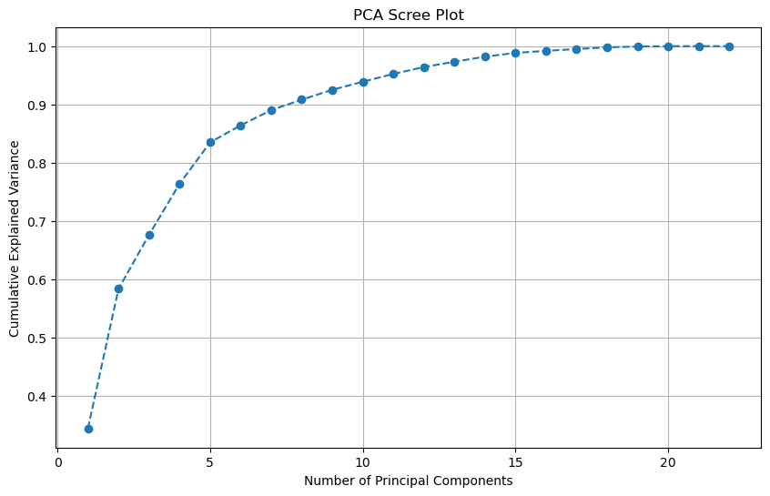
PC 1: Explained Variance Ratio: 0.3434, Cumulative Variance: 0.3434
PC 2: Explained Variance Ratio: 0.2397, Cumulative Variance: 0.5831
PC 3: Explained Variance Ratio: 0.0927, Cumulative Variance: 0.6758
PC 4: Explained Variance Ratio: 0.0877, Cumulative Variance: 0.7635
PC 5: Explained Variance Ratio: 0.0711, Cumulative Variance: 0.8347
PC 6: Explained Variance Ratio: 0.0293, Cumulative Variance: 0.8639
PC 7: Explained Variance Ratio: 0.0261, Cumulative Variance: 0.8901
PC 8: Explained Variance Ratio: 0.0181, Cumulative Variance: 0.9081
PC 9: Explained Variance Ratio: 0.0169, Cumulative Variance: 0.9250
PC 10: Explained Variance Ratio: 0.0139, Cumulative Variance: 0.9389
PC 11: Explained Variance Ratio: 0.0135, Cumulative Variance: 0.9523
PC 12: Explained Variance Ratio: 0.0118, Cumulative Variance: 0.9641
PC 13: Explained Variance Ratio: 0.0091, Cumulative Variance: 0.9732
PC 14: Explained Variance Ratio: 0.0087, Cumulative Variance: 0.9820
PC 15: Explained Variance Ratio: 0.0065, Cumulative Variance: 0.9885
PC 16: Explained Variance Ratio: 0.0035, Cumulative Variance: 0.9919
PC 17: Explained Variance Ratio: 0.0031, Cumulative Variance: 0.9950
PC 18: Explained Variance Ratio: 0.0029, Cumulative Variance: 0.9980
PC 19: Explained Variance Ratio: 0.0015, Cumulative Variance: 0.9994
PC 20: Explained Variance Ratio: 0.0006, Cumulative Variance: 1.0000
PC 21: Explained Variance Ratio: 0.0000, Cumulative Variance: 1.0000
PC 22: Explained Variance Ratio: 0.0000, Cumulative Variance: 1.0000
Experiment #6: Design a nd execute a custom experiment. Log results in MLFlow.#
import numpy as np
import pandas as pd
from sklearn.model_selection import train_test_split
from sklearn.pipeline import Pipeline
from sklearn.preprocessing import StandardScaler, OneHotEncoder
from sklearn.compose import ColumnTransformer
from sklearn.linear_model import LogisticRegression, RidgeClassifier
from sklearn.ensemble import RandomForestClassifier, GradientBoostingClassifier
from sklearn.neighbors import KNeighborsClassifier
from sklearn.svm import SVC
from xgboost import XGBClassifier
from sklearn.decomposition import PCA
from sklearn.feature_selection import SelectFromModel
from sklearn.metrics import f1_score, confusion_matrix
import mlflow
# ----- Load Data -----
df = df_combined.copy()
def clean_column_names(df):
df.columns = df.columns.str.replace(' ', '_').str.lower()
return df
df = clean_column_names(df)
# ----- Data Cleaning -----
df['resting_bp_s'] = df['resting_bp_s'].replace(0, np.nan)
df['cholesterol'] = df['cholesterol'].replace(0, np.nan)
df['oldpeak'] = df['oldpeak'].clip(lower=0)
df['resting_bp_s'].fillna(df['resting_bp_s'].median(), inplace=True)
df['cholesterol'].fillna(df['cholesterol'].median(), inplace=True)
df.drop(columns=['patient_id'], errors='ignore', inplace=True)
# ----- Feature Engineering -----
df['bp_cholesterol_interaction'] = df['resting_bp_s'] * df['cholesterol']
df['cholesterol_squared'] = df['cholesterol'] ** 2
df['bp_hr_ratio'] = df['resting_bp_s'] / df['max_heart_rate']
df['combined_health_score'] = df[['resting_bp_s', 'cholesterol', 'max_heart_rate']].mean(axis=1)
df['age_group'] = pd.cut(df['age'], bins=[0, 40, 60, 80], labels=['Young', 'Middle-aged', 'Senior'])
# ----- Preprocessing -----
numeric_features = ['age', 'resting_bp_s', 'cholesterol', 'max_heart_rate', 'oldpeak',
'bp_cholesterol_interaction', 'cholesterol_squared', 'bp_hr_ratio', 'combined_health_score']
categorical_features = ['sex', 'fasting_blood_sugar', 'exercise_angina', 'chest_pain_type', 'resting_ecg', 'st_slope', 'age_group']
numeric_transformer = StandardScaler()
categorical_transformer = OneHotEncoder(drop='first', sparse_output=False)
preprocessor = ColumnTransformer(
transformers=[
('num', numeric_transformer, numeric_features),
('cat', categorical_transformer, categorical_features)
]
)
X = preprocessor.fit_transform(df.drop(columns=['target']))
y = df['target']
X = pd.DataFrame(X, columns=numeric_features + list(preprocessor.named_transformers_['cat'].get_feature_names_out(categorical_features)))
X_train, X_test, y_train, y_test = train_test_split(X, y, test_size=0.2, random_state=42, stratify=y)
# ----- Experiment 6 and 7 Classifiers -----
classifiers = {
"LogisticRegression_FE2nd": LogisticRegression(max_iter=500, random_state=42),
"RidgeClassifier_FE": RidgeClassifier(random_state=42),
"RandomForestClassifier_FE": RandomForestClassifier(n_estimators=100, random_state=42),
"XGBClassifier_FE": XGBClassifier(use_label_encoder=False, eval_metric='logloss', random_state=42),
"KNeighborsClassifier_FE": KNeighborsClassifier(),
"SVC_FE": SVC(kernel='rbf', probability=True, random_state=42),
"GradientBoostingClassifier_FE": GradientBoostingClassifier(random_state=42)
}
# ----- Experiment 6: Feature Engineering Only -----
def run_experiment_6(X_train, X_test, y_train, y_test):
print("\n--- Experiment 6: Feature Engineering Only ---")
mlflow.set_experiment("Heart Disease Experiment")
for name, model in classifiers.items():
pipeline = Pipeline([('classifier', model)])
pipeline.fit(X_train, y_train)
y_train_pred = pipeline.predict(X_train)
y_test_pred = pipeline.predict(X_test)
f1_train = f1_score(y_train, y_train_pred)
f1_test = f1_score(y_test, y_test_pred)
cm_train = confusion_matrix(y_train, y_train_pred)
cm_test = confusion_matrix(y_test, y_test_pred)
print(f"\n{name} (Feature Engineering):")
print(f"Train F1 Score: {f1_train}")
print(f"Test F1 Score: {f1_test}")
with mlflow.start_run(run_name=f"{name}"):
mlflow.log_metric("Train F1 Score", f1_train)
mlflow.log_metric("Test F1 Score", f1_test)
mlflow.log_param("Classifier", name)
mlflow.sklearn.log_model(pipeline, f"{name}_FE")
run_experiment_6(X_train, X_test, y_train, y_test)
--- Experiment 6: Feature Engineering Only ---
/var/folders/88/h6q1hd0558n2s59lz2g0xx640000gn/T/ipykernel_95383/1222561477.py:30: FutureWarning: A value is trying to be set on a copy of a DataFrame or Series through chained assignment using an inplace method.
The behavior will change in pandas 3.0. This inplace method will never work because the intermediate object on which we are setting values always behaves as a copy.
For example, when doing 'df[col].method(value, inplace=True)', try using 'df.method({col: value}, inplace=True)' or df[col] = df[col].method(value) instead, to perform the operation inplace on the original object.
df['resting_bp_s'].fillna(df['resting_bp_s'].median(), inplace=True)
/var/folders/88/h6q1hd0558n2s59lz2g0xx640000gn/T/ipykernel_95383/1222561477.py:31: FutureWarning: A value is trying to be set on a copy of a DataFrame or Series through chained assignment using an inplace method.
The behavior will change in pandas 3.0. This inplace method will never work because the intermediate object on which we are setting values always behaves as a copy.
For example, when doing 'df[col].method(value, inplace=True)', try using 'df.method({col: value}, inplace=True)' or df[col] = df[col].method(value) instead, to perform the operation inplace on the original object.
df['cholesterol'].fillna(df['cholesterol'].median(), inplace=True)
LogisticRegression_FE2nd (Feature Engineering):
Train F1 Score: 0.8644400785854617
Test F1 Score: 0.875
2024/12/21 18:32:54 WARNING mlflow.models.model: Model logged without a signature and input example. Please set `input_example` parameter when logging the model to auto infer the model signature.
🏃 View run LogisticRegression_FE2nd at: https://dagshub.com/rohanjain127/my-first-repo.mlflow/#/experiments/1/runs/e860d10ccd5e4c5aaed5360da3a58679
🧪 View experiment at: https://dagshub.com/rohanjain127/my-first-repo.mlflow/#/experiments/1
RidgeClassifier_FE (Feature Engineering):
Train F1 Score: 0.8565815324165029
Test F1 Score: 0.8715953307392996
2024/12/21 18:33:07 WARNING mlflow.models.model: Model logged without a signature and input example. Please set `input_example` parameter when logging the model to auto infer the model signature.
🏃 View run RidgeClassifier_FE at: https://dagshub.com/rohanjain127/my-first-repo.mlflow/#/experiments/1/runs/4f33736dd0084f49a046d05323b2fb40
🧪 View experiment at: https://dagshub.com/rohanjain127/my-first-repo.mlflow/#/experiments/1
RandomForestClassifier_FE (Feature Engineering):
Train F1 Score: 1.0
Test F1 Score: 0.9173553719008265
2024/12/21 18:33:20 WARNING mlflow.models.model: Model logged without a signature and input example. Please set `input_example` parameter when logging the model to auto infer the model signature.
🏃 View run RandomForestClassifier_FE at: https://dagshub.com/rohanjain127/my-first-repo.mlflow/#/experiments/1/runs/f746ea05606a48e58f244c8b1afb1d5a
🧪 View experiment at: https://dagshub.com/rohanjain127/my-first-repo.mlflow/#/experiments/1
XGBClassifier_FE (Feature Engineering):
Train F1 Score: 1.0
Test F1 Score: 0.9156626506024096
2024/12/21 18:33:33 WARNING mlflow.models.model: Model logged without a signature and input example. Please set `input_example` parameter when logging the model to auto infer the model signature.
🏃 View run XGBClassifier_FE at: https://dagshub.com/rohanjain127/my-first-repo.mlflow/#/experiments/1/runs/41ce2947e2ab4a54a2391a5facf78341
🧪 View experiment at: https://dagshub.com/rohanjain127/my-first-repo.mlflow/#/experiments/1
KNeighborsClassifier_FE (Feature Engineering):
Train F1 Score: 0.8888888888888888
Test F1 Score: 0.8790322580645161
2024/12/21 18:33:46 WARNING mlflow.models.model: Model logged without a signature and input example. Please set `input_example` parameter when logging the model to auto infer the model signature.
🏃 View run KNeighborsClassifier_FE at: https://dagshub.com/rohanjain127/my-first-repo.mlflow/#/experiments/1/runs/9ee7f4f15a1c4724b5c75b3ac8ce1485
🧪 View experiment at: https://dagshub.com/rohanjain127/my-first-repo.mlflow/#/experiments/1
SVC_FE (Feature Engineering):
Train F1 Score: 0.899009900990099
Test F1 Score: 0.8995983935742972
2024/12/21 18:33:59 WARNING mlflow.models.model: Model logged without a signature and input example. Please set `input_example` parameter when logging the model to auto infer the model signature.
🏃 View run SVC_FE at: https://dagshub.com/rohanjain127/my-first-repo.mlflow/#/experiments/1/runs/cdd4a4a7af9040c39e26a39af37cc676
🧪 View experiment at: https://dagshub.com/rohanjain127/my-first-repo.mlflow/#/experiments/1
GradientBoostingClassifier_FE (Feature Engineering):
Train F1 Score: 0.95703125
Test F1 Score: 0.9212598425196851
2024/12/21 18:34:12 WARNING mlflow.models.model: Model logged without a signature and input example. Please set `input_example` parameter when logging the model to auto infer the model signature.
🏃 View run GradientBoostingClassifier_FE at: https://dagshub.com/rohanjain127/my-first-repo.mlflow/#/experiments/1/runs/beb9f84071544bdcbec513f638fec42b
🧪 View experiment at: https://dagshub.com/rohanjain127/my-first-repo.mlflow/#/experiments/1
X_train.head()
| age | resting_bp_s | cholesterol | max_heart_rate | oldpeak | bp_cholesterol_interaction | cholesterol_squared | bp_hr_ratio | combined_health_score | sex_1 | ... | chest_pain_type_2 | chest_pain_type_3 | chest_pain_type_4 | resting_ecg_1 | resting_ecg_2 | st_slope_1 | st_slope_2 | st_slope_3 | age_group_Senior | age_group_Young | |
|---|---|---|---|---|---|---|---|---|---|---|---|---|---|---|---|---|---|---|---|---|---|
| 360 | -0.076988 | -1.518258 | -0.095409 | -0.969650 | -0.873002 | -0.834938 | -0.171930 | -0.276076 | -0.915600 | 1.0 | ... | 0.0 | 1.0 | 0.0 | 0.0 | 0.0 | 0.0 | 1.0 | 0.0 | 0.0 | 0.0 |
| 842 | -1.359825 | 0.152420 | -0.794037 | -0.303164 | -0.873002 | -0.583067 | -0.708119 | 0.140063 | -0.755106 | 1.0 | ... | 1.0 | 0.0 | 0.0 | 0.0 | 0.0 | 0.0 | 1.0 | 0.0 | 0.0 | 0.0 |
| 54 | -0.183891 | -0.126026 | -1.228319 | 0.010477 | 0.529742 | -1.040548 | -0.996283 | -0.217163 | -1.076095 | 0.0 | ... | 0.0 | 0.0 | 1.0 | 0.0 | 0.0 | 0.0 | 1.0 | 0.0 | 0.0 | 0.0 |
| 528 | 0.778236 | 0.375177 | 0.716510 | -0.185549 | -0.592453 | 0.779895 | 0.563739 | 0.166251 | 0.641195 | 1.0 | ... | 1.0 | 0.0 | 0.0 | 0.0 | 0.0 | 1.0 | 0.0 | 0.0 | 1.0 | 0.0 |
| 969 | -1.573631 | 0.430866 | 1.434020 | 1.657089 | -0.873002 | 1.419912 | 1.314555 | -0.821699 | 2.021448 | 1.0 | ... | 0.0 | 1.0 | 0.0 | 0.0 | 1.0 | 1.0 | 0.0 | 0.0 | 0.0 | 1.0 |
5 rows × 22 columns
Experiment #7: Design and execute another custom experiment. Log results in MLFlow.#
import numpy as np
import pandas as pd
from sklearn.model_selection import train_test_split
from sklearn.pipeline import Pipeline
from sklearn.preprocessing import StandardScaler, OneHotEncoder
from sklearn.compose import ColumnTransformer
from sklearn.linear_model import LogisticRegression, RidgeClassifier
from sklearn.ensemble import RandomForestClassifier, GradientBoostingClassifier
from sklearn.neighbors import KNeighborsClassifier
from sklearn.svm import SVC
from xgboost import XGBClassifier
from sklearn.decomposition import PCA
from sklearn.feature_selection import SelectFromModel
from sklearn.metrics import f1_score, confusion_matrix
import mlflow
# ----- Load Data -----
df = df_combined.copy()
def clean_column_names(df):
df.columns = df.columns.str.replace(' ', '_').str.lower()
return df
df = clean_column_names(df)
# ----- Data Cleaning -----
df['resting_bp_s'] = df['resting_bp_s'].replace(0, np.nan)
df['cholesterol'] = df['cholesterol'].replace(0, np.nan)
df['oldpeak'] = df['oldpeak'].clip(lower=0)
df['resting_bp_s'].fillna(df['resting_bp_s'].median(), inplace=True)
df['cholesterol'].fillna(df['cholesterol'].median(), inplace=True)
df.drop(columns=['patient_id'], errors='ignore', inplace=True)
# ----- Feature Engineering -----
df['bp_cholesterol_interaction'] = df['resting_bp_s'] * df['cholesterol']
df['cholesterol_squared'] = df['cholesterol'] ** 2
df['bp_hr_ratio'] = df['resting_bp_s'] / df['max_heart_rate']
df['combined_health_score'] = df[['resting_bp_s', 'cholesterol', 'max_heart_rate']].mean(axis=1)
df['age_group'] = pd.cut(df['age'], bins=[0, 40, 60, 80], labels=['Young', 'Middle-aged', 'Senior'])
# ----- Preprocessing -----
numeric_features = ['age', 'resting_bp_s', 'cholesterol', 'max_heart_rate', 'oldpeak',
'bp_cholesterol_interaction', 'cholesterol_squared', 'bp_hr_ratio', 'combined_health_score']
categorical_features = ['sex', 'fasting_blood_sugar', 'exercise_angina', 'chest_pain_type', 'resting_ecg', 'st_slope', 'age_group']
numeric_transformer = StandardScaler()
categorical_transformer = OneHotEncoder(drop='first', sparse_output=False)
preprocessor = ColumnTransformer(
transformers=[
('num', numeric_transformer, numeric_features),
('cat', categorical_transformer, categorical_features)
]
)
X = preprocessor.fit_transform(df.drop(columns=['target']))
y = df['target']
X = pd.DataFrame(X, columns=numeric_features + list(preprocessor.named_transformers_['cat'].get_feature_names_out(categorical_features)))
X_train, X_test, y_train, y_test = train_test_split(X, y, test_size=0.2, random_state=42, stratify=y)
classifiers = {
"LogisticRegression_FE_PCA2nd": LogisticRegression(max_iter=500, random_state=42),
"RidgeClassifier_FE_PCA": RidgeClassifier(random_state=42),
"RandomForestClassifier_FE_PCA": RandomForestClassifier(n_estimators=100, random_state=42),
"XGBClassifier_FE_PCA": XGBClassifier(use_label_encoder=False, eval_metric='logloss', random_state=42),
"KNeighborsClassifier_FE_PCA": KNeighborsClassifier(),
"SVC_FE_PCA": SVC(kernel='rbf', probability=True, random_state=42),
"GradientBoostingClassifier_FE_PCA": GradientBoostingClassifier(random_state=42)
}
# ----- Experiment 7: Feature Engineering + Feature Selection + PCA -----
def run_experiment_7(X_train, X_test, y_train, y_test):
print("\n--- Experiment 7: Feature Selection and PCA ---")
mlflow.set_experiment("Heart Disease Experiment")
# Feature Selection
selector = SelectFromModel(RandomForestClassifier(n_estimators=100, random_state=42), threshold='median')
X_train_selected = selector.fit_transform(X_train, y_train)
X_test_selected = selector.transform(X_test)
# PCA
pca = PCA(n_components=0.95) # Keep 95% variance
X_train_pca = pca.fit_transform(X_train_selected)
X_test_pca = pca.transform(X_test_selected)
print("\nPCA Components Retained:", pca.n_components_)
for name, model in classifiers.items():
model.fit(X_train_pca, y_train)
y_train_pred = model.predict(X_train_pca)
y_test_pred = model.predict(X_test_pca)
f1_train = f1_score(y_train, y_train_pred)
f1_test = f1_score(y_test, y_test_pred)
print(f"\n{name} (Feature Selection + PCA):")
print(f"Train F1 Score: {f1_train}")
print(f"Test F1 Score: {f1_test}")
with mlflow.start_run(run_name=f"{name}"):
mlflow.log_metric("Train F1 Score", f1_train)
mlflow.log_metric("Test F1 Score", f1_test)
mlflow.log_param("Classifier", name)
mlflow.sklearn.log_model(model, f"{name}_FE_FS_PCA")
run_experiment_7(X_train, X_test, y_train, y_test)
/var/folders/88/h6q1hd0558n2s59lz2g0xx640000gn/T/ipykernel_95383/2700528972.py:30: FutureWarning: A value is trying to be set on a copy of a DataFrame or Series through chained assignment using an inplace method.
The behavior will change in pandas 3.0. This inplace method will never work because the intermediate object on which we are setting values always behaves as a copy.
For example, when doing 'df[col].method(value, inplace=True)', try using 'df.method({col: value}, inplace=True)' or df[col] = df[col].method(value) instead, to perform the operation inplace on the original object.
df['resting_bp_s'].fillna(df['resting_bp_s'].median(), inplace=True)
/var/folders/88/h6q1hd0558n2s59lz2g0xx640000gn/T/ipykernel_95383/2700528972.py:31: FutureWarning: A value is trying to be set on a copy of a DataFrame or Series through chained assignment using an inplace method.
The behavior will change in pandas 3.0. This inplace method will never work because the intermediate object on which we are setting values always behaves as a copy.
For example, when doing 'df[col].method(value, inplace=True)', try using 'df.method({col: value}, inplace=True)' or df[col] = df[col].method(value) instead, to perform the operation inplace on the original object.
df['cholesterol'].fillna(df['cholesterol'].median(), inplace=True)
--- Experiment 7: Feature Selection and PCA ---
PCA Components Retained: 6
LogisticRegression_FE_PCA2nd (Feature Selection + PCA):
Train F1 Score: 0.8244575936883629
Test F1 Score: 0.84
2024/12/21 18:34:25 WARNING mlflow.models.model: Model logged without a signature and input example. Please set `input_example` parameter when logging the model to auto infer the model signature.
🏃 View run LogisticRegression_FE_PCA2nd at: https://dagshub.com/rohanjain127/my-first-repo.mlflow/#/experiments/1/runs/d64fbbc76daf45f2a0e290e93ebd8cab
🧪 View experiment at: https://dagshub.com/rohanjain127/my-first-repo.mlflow/#/experiments/1
RidgeClassifier_FE_PCA (Feature Selection + PCA):
Train F1 Score: 0.8170128585558852
Test F1 Score: 0.8616600790513834
2024/12/21 18:34:38 WARNING mlflow.models.model: Model logged without a signature and input example. Please set `input_example` parameter when logging the model to auto infer the model signature.
🏃 View run RidgeClassifier_FE_PCA at: https://dagshub.com/rohanjain127/my-first-repo.mlflow/#/experiments/1/runs/8bcbe505ead2443db128b04828d92469
🧪 View experiment at: https://dagshub.com/rohanjain127/my-first-repo.mlflow/#/experiments/1
RandomForestClassifier_FE_PCA (Feature Selection + PCA):
Train F1 Score: 1.0
Test F1 Score: 0.9230769230769231
2024/12/21 18:34:51 WARNING mlflow.models.model: Model logged without a signature and input example. Please set `input_example` parameter when logging the model to auto infer the model signature.
🏃 View run RandomForestClassifier_FE_PCA at: https://dagshub.com/rohanjain127/my-first-repo.mlflow/#/experiments/1/runs/a41e24f5ee4546eebac339dc03593c27
🧪 View experiment at: https://dagshub.com/rohanjain127/my-first-repo.mlflow/#/experiments/1
XGBClassifier_FE_PCA (Feature Selection + PCA):
Train F1 Score: 1.0
Test F1 Score: 0.8925619834710744
2024/12/21 18:35:04 WARNING mlflow.models.model: Model logged without a signature and input example. Please set `input_example` parameter when logging the model to auto infer the model signature.
🏃 View run XGBClassifier_FE_PCA at: https://dagshub.com/rohanjain127/my-first-repo.mlflow/#/experiments/1/runs/9c7bebbc1fa44ec3bb0dd5083a4615b2
🧪 View experiment at: https://dagshub.com/rohanjain127/my-first-repo.mlflow/#/experiments/1
KNeighborsClassifier_FE_PCA (Feature Selection + PCA):
Train F1 Score: 0.8712871287128713
Test F1 Score: 0.8433734939759037
2024/12/21 18:35:17 WARNING mlflow.models.model: Model logged without a signature and input example. Please set `input_example` parameter when logging the model to auto infer the model signature.
🏃 View run KNeighborsClassifier_FE_PCA at: https://dagshub.com/rohanjain127/my-first-repo.mlflow/#/experiments/1/runs/ae6dcbc8265748179cd0ce350605541f
🧪 View experiment at: https://dagshub.com/rohanjain127/my-first-repo.mlflow/#/experiments/1
SVC_FE_PCA (Feature Selection + PCA):
Train F1 Score: 0.84765625
Test F1 Score: 0.8571428571428571
2024/12/21 18:35:30 WARNING mlflow.models.model: Model logged without a signature and input example. Please set `input_example` parameter when logging the model to auto infer the model signature.
🏃 View run SVC_FE_PCA at: https://dagshub.com/rohanjain127/my-first-repo.mlflow/#/experiments/1/runs/1455519a5b8340c2975ce2b3a4e41b93
🧪 View experiment at: https://dagshub.com/rohanjain127/my-first-repo.mlflow/#/experiments/1
GradientBoostingClassifier_FE_PCA (Feature Selection + PCA):
Train F1 Score: 0.9322865554465162
Test F1 Score: 0.8629032258064516
2024/12/21 18:35:43 WARNING mlflow.models.model: Model logged without a signature and input example. Please set `input_example` parameter when logging the model to auto infer the model signature.
🏃 View run GradientBoostingClassifier_FE_PCA at: https://dagshub.com/rohanjain127/my-first-repo.mlflow/#/experiments/1/runs/243ec534392843b0909f9f43a85d9a76
🧪 View experiment at: https://dagshub.com/rohanjain127/my-first-repo.mlflow/#/experiments/1
X_train.head()
| age | resting_bp_s | cholesterol | max_heart_rate | oldpeak | bp_cholesterol_interaction | cholesterol_squared | bp_hr_ratio | combined_health_score | sex_1 | ... | chest_pain_type_2 | chest_pain_type_3 | chest_pain_type_4 | resting_ecg_1 | resting_ecg_2 | st_slope_1 | st_slope_2 | st_slope_3 | age_group_Senior | age_group_Young | |
|---|---|---|---|---|---|---|---|---|---|---|---|---|---|---|---|---|---|---|---|---|---|
| 360 | -0.076988 | -1.518258 | -0.095409 | -0.969650 | -0.873002 | -0.834938 | -0.171930 | -0.276076 | -0.915600 | 1.0 | ... | 0.0 | 1.0 | 0.0 | 0.0 | 0.0 | 0.0 | 1.0 | 0.0 | 0.0 | 0.0 |
| 842 | -1.359825 | 0.152420 | -0.794037 | -0.303164 | -0.873002 | -0.583067 | -0.708119 | 0.140063 | -0.755106 | 1.0 | ... | 1.0 | 0.0 | 0.0 | 0.0 | 0.0 | 0.0 | 1.0 | 0.0 | 0.0 | 0.0 |
| 54 | -0.183891 | -0.126026 | -1.228319 | 0.010477 | 0.529742 | -1.040548 | -0.996283 | -0.217163 | -1.076095 | 0.0 | ... | 0.0 | 0.0 | 1.0 | 0.0 | 0.0 | 0.0 | 1.0 | 0.0 | 0.0 | 0.0 |
| 528 | 0.778236 | 0.375177 | 0.716510 | -0.185549 | -0.592453 | 0.779895 | 0.563739 | 0.166251 | 0.641195 | 1.0 | ... | 1.0 | 0.0 | 0.0 | 0.0 | 0.0 | 1.0 | 0.0 | 0.0 | 1.0 | 0.0 |
| 969 | -1.573631 | 0.430866 | 1.434020 | 1.657089 | -0.873002 | 1.419912 | 1.314555 | -0.821699 | 2.021448 | 1.0 | ... | 0.0 | 1.0 | 0.0 | 0.0 | 1.0 | 1.0 | 0.0 | 0.0 | 0.0 | 1.0 |
5 rows × 22 columns
# Step 6: Select and Save the Best Model
best_model = trained_models.get("XGBClassifier1st", None) # Use .get() to avoid KeyError
if best_model:
model_path = '/Users/rohanjain/Desktop/Sem1/Prog_DB/Final_project/heart_disease_best_model.joblib'
joblib.dump(best_model, model_path)
print(f"\nBest Model (XGBClassifier1st) saved to: {model_path}")
else:
print("XGBClassifier1st not found in trained models.")
Best Model (XGBClassifier1st) saved to: /Users/rohanjain/Desktop/Sem1/Prog_DB/Final_project/heart_disease_best_model.joblib